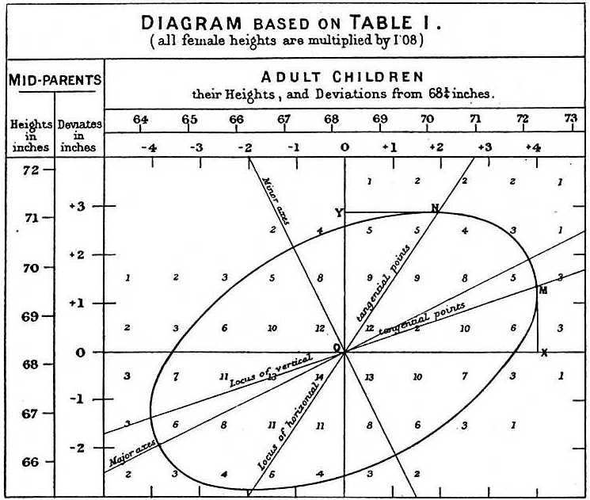
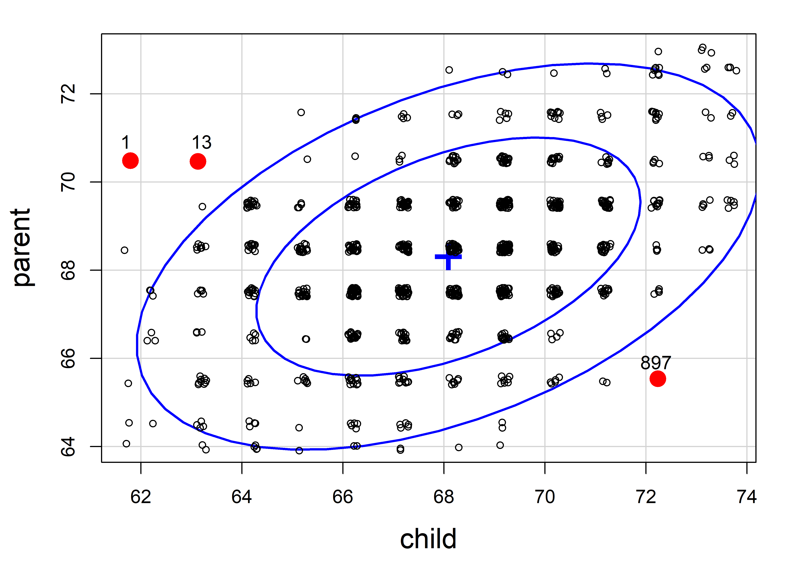
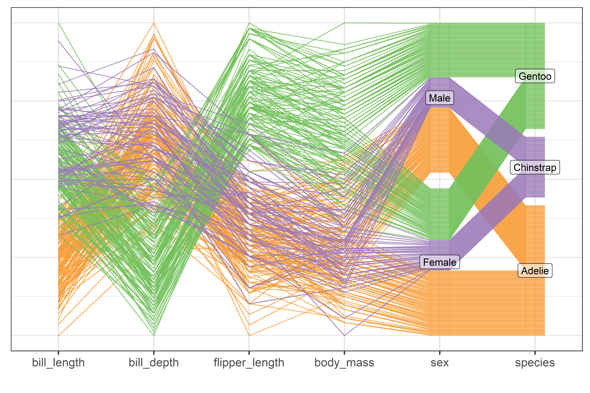
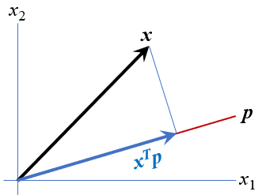
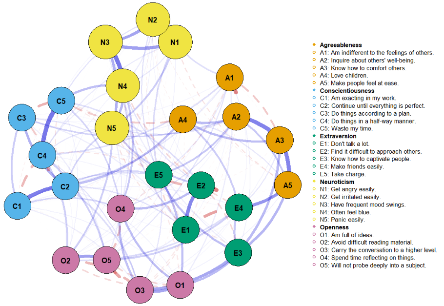

library(car)
library(ggplot2)
library(dplyr)
library(tidyr)
library(corrplot)
library(corrgram)
library(GGally)
library(ggdensity)
library(patchwork)
library(ggpcp)
library(tourr)
library(heplots)
library(gggda)
# set basic ggplot theme
ggplot2::theme_set(theme_bw(base_size = 14))There is no excuse for failing to plot and look. The greatest value of a picture is when it forces us to notice what we never expected to see. — John W. Tukey (1977), Exploratory Data Analysis
These quotes from John Tukey remind us that data analysis should nearly always start with graphs to help us understand the main features of our data. It is important to understand the general patterns and trends: Are relationships increasing or decreasing? Are they approximately linear or non-linear? But it is also important to spot anomalies: “unusual” observations, groups of points that seem to differ from the rest, and so forth. As we saw with Anscombe’s quartet (sec-anscombe) and the Davis weight data (sec-davis) numerical summaries hide features that are immediately apparent in a plot.
This chapter introduces a toolbox of basic graphical methods for visualizing multivariate datasets. It starts with some simple techniques to enhance the basic scatterplot with graphical annotations such as fitted lines, curves (sec-bivariate_summaries) and data ellipses (sec-data-ellipse) which serve to add visual summaries of the relation between two variables.
To visualize more than two variables, we can view all pairs of variables in a scatterplot matrix (sec-scatmat) or shift gears entirely to show multiple variables along a set of parallel axes (sec-parcoord).
As the number of variables increases, we may need to suppress details with stronger summaries (sec-visual-thinning) for a high-level reconnaissance of our data terrain, as we do by zooming out on a map. For example, we can simply remove the data points or make them nearly transparent to focus on the visual summaries provided by fitted lines or other graphical summaries.
Another approach to visualizing high-D data uses animated tours (sec-animated-tours) to show the data in a sequence of low-D projections, typically 2D, designed to reveal interesting features that might not otherwise be visible. At a higher level of abstraction, network diagrams (sec-network) representing the structure of correlations among a possibly large set of variables offer another useful technique.
Packages
In this chapter I use the following packages. Load them now:
4.1 Bivariate summaries
The basic scatterplot is the workhorse of multivariate data visualization, showing how one variable, \(y\), often an outcome to be explained by or varies with another, \(x\). It is a building block for many useful techniques, so it is helpful to understand how it can be used as a tool for thinking in a wider, multivariate context.
The essential idea is that we can start with a simple version of the scatterplot and add annotations to show interesting features more clearly. I consider the following here:
- Smoothers: Showing overall trends, perhaps in several forms, as visual summaries such as fitted regression lines or curves and nonparametric smoothers.
- Stratifiers: Using color, shape or other features to identify subgroups; more generally, conditioning on other variables in multi-panel displays;
- Data ellipses: A compact 2D visual summary of bivariate linear relations and uncertainty assuming normality; more generally, contour plots of bivariate density.
Example 4.1 Academic salaries
Let’s start with data on the academic salaries of faculty members collected at a U.S. college for the purpose of assessing salary differences between male and female faculty members, and perhaps address anomalies in compensation. The dataset carData::Salaries gives data on nine-month salaries and other variables for 397 faculty members in the 2008-2009 academic year.
data(Salaries, package = "carData")
str(Salaries)
# 'data.frame': 397 obs. of 6 variables:
# $ rank : Factor w/ 3 levels "AsstProf","AssocProf",..: 3 3 1 3 3 2 3 3 3 3 ...
# $ discipline : Factor w/ 2 levels "A","B": 2 2 2 2 2 2 2 2 2 2 ...
# $ yrs.since.phd: int 19 20 4 45 40 6 30 45 21 18 ...
# $ yrs.service : int 18 16 3 39 41 6 23 45 20 18 ...
# $ sex : Factor w/ 2 levels "Female","Male": 2 2 2 2 2 2 2 2 2 1 ...
# $ salary : int 139750 173200 79750 115000 141500 97000 175000 147765 119250 129000 ...The most obvious, but perhaps naive, predictor of salary is years.since.phd. For simplicity, I’ll refer to this as years of “experience.” Before looking at differences between males and females, we would want consider faculty rank (related also to yrs.service) and discipline, recorded here as "A" (“theoretical” departments) or "B" (“applied” departments). But, for a basic plot, we will ignore these for now to focus on what can be learned from plot annotations.
gg1 <- ggplot(Salaries,
aes(x = yrs.since.phd, y = salary)) +
geom_jitter(size = 2) +
scale_y_continuous(labels = scales::dollar_format(
prefix="$", scale = 0.001, suffix = "K")) +
labs(x = "Years since PhD",
y = "Salary")
gg1 + geom_rug(position = "jitter", alpha = 1/4)
There is quite a lot we can see “just by looking” at this simple plot, but the main things are:
- Salary increases generally from 0 - 40 years since the PhD, but then maybe begins to drop off (partial retirement?);
- Variability in salary increases among those with the same experience, a “fan-shaped” pattern that signals a violation of homogeneity of variance in simple regression;
- Data beyond 50 years is thin, but there are some quite low salaries there. Adding rug plots to the X and Y axes is a simple but effective way to show the marginal distributions of the observations. Jitter and transparency helps to avoid overplotting due to discrete values.
4.1.1 Smoothers
Smoothers are among the most useful graphical annotations you can add to such plots, giving a visual summary of how \(y\) changes with \(x\). The most common smoother is a line showing the linear regression for \(y\) given \(x\), expressed in math notation as \(\mathbb{E} (y | x) = b_0 + b_1 x\). If there is doubt that a linear relation is an adequate summary, you can try a quadratic or other polynomial smoothers.
In ggplot2, these are easily added to a plot using geom_smooth() with method = "lm", and a model formula, which (by default) is y ~ x for a linear relation or y ~ poly(x, k) for a polynomial of degree \(k\).
Show the code
gg1 +
geom_smooth(method = "lm", formula = "y ~ x",
color = "red", fill= "pink",
linewidth = 2) +
geom_smooth(method = "lm", formula = "y ~ poly(x,2)",
color = "darkgreen", fill = "lightgreen",
linewidth = 2) 
This serves to highlight some of our impressions from the basic scatterplot shown in Figure fig-Salaries-scat, making them more apparent. And that’s precisely the point: the regression smoother draws attention to a possible pattern that we can consider as a visual summary of the data. You can think of this as showing what a linear (or quadratic) regression “sees” in the data. Statistical tests can help you decide if there is more evidence for a quadratic fit compared to the simpler linear relation.
It is useful to also show some indication of uncertainty (or inversely, precision) associated with the predicted values. Both the linear and quadratic trends are shown in Figure fig-Salaries-lm with 95% pointwise confidence bands.1 These are necessarily narrower in the center of the range of \(x\) where there is typically more data; they get wider toward the highest values of experience where the data are thinner.
Non-parametric smoothers
The most generally useful idea is a smoother that tracks an average value, \(\mathbb{E} (y | x)\), of \(y\) as \(x\) varies across its’ range without assuming any particular functional form, and so avoiding the necessity to choose among y ~ poly(x, 1), or y ~ poly(x, 2), or y ~ poly(x, 3), etc.
Non-parametric smoothers attempt to estimate \(\mathbb{E} (y | x) = f(x)\) where \(f(x)\) is some smooth function. These typically use a collection of weighted local regressions for each \(x_i\) within a window centered at that value. In the method called lowess or loess (Cleveland, 1979; Cleveland & Devlin, 1988), a weight function is applied, giving greatest weight to \(x_i\) and a weight of 0 outside a window containing a certain fraction, \(s\), called span, of the nearest neighbors of \(x_i\). The fraction, \(s\), is usually within the range \(1/3 \le s \le 2/3\), and it determines the smoothness of the resulting curve; smaller values produce a wigglier curve and larger values giving a smoother fit (an optimal span can be determined by \(k\)-fold cross-validation to minimize a measure of overall error of approximation).
Non-parametric regression is a broad topic; see Fox (2016), Ch. 18 for a more general treatment including smoothing splines, and Wood (2006) for generalized additive models, fit using method = "gam" in ggplot2, which is the default when the largest group has more than 1,000 observations.
Figure fig-Salaries-loess shows the addition of a loess smooth to the plot in Figure fig-Salaries-lm, suppressing the confidence band for the linear regression. The loess fit is nearly coincident with the quadratic fit, but has a slightly wider confidence band.
Code
gg1 +
geom_smooth(method = "loess", formula = "y ~ x",
color = "blue", fill = scales::muted("blue"),
linewidth = 2) +
geom_smooth(method = "lm", formula = "y ~ x", se = FALSE,
color = "red",
linewidth = 2) +
geom_smooth(method = "lm", formula = "y ~ poly(x,2)",
color = "darkgreen", fill = "lightgreen",
linewidth = 2) But now comes an important question: is it reasonable that academic salary should increase up to about 40 years since the PhD degree and then decline? The predicted salary for someone still working 50 years after earning their degree is about the same as a person at 15 years. What else is going on here?
4.1.2 Stratifiers
Very often, we have a main relationship of interest, but various groups in the data are identified by discrete factors (like faculty rank and sex, their type of discipline here), or there are quantitative predictors for which the main relation might vary. In the language of statistical models such effects are interaction terms, as in y ~ group + x + group:x, where the term group:x fits a different slope for each group and the grouping variable is often called a moderator variable. Common moderator variables are ethnicity, health status, social class and level of education. Moderators can also be continuous variables as in y ~ x1 + x2 + x1:x2.
I call these stratifiers, recognizing that we should consider breaking down the overall relation to see whether and how it changes over such “other” variables. Such variables are most often factors, but we can cut a continuous variable into ranges (shingles) and do the same graphically. There are two general graphical techniques for stratifying:
Grouping: Identify subgroups in the data by assigning different visual attributes, such as color, shape, line style, etc. within a single plot, as shown in Figure fig-Salaries-rank below. This is quite natural for factors; quantitative predictors can be accommodated by cutting their range into ordered intervals. Grouping has the advantage that the levels of a grouping variable can be shown within the same plot, facilitating direct comparison.
Conditioning: Showing subgroups in different plot panels, as in Figure fig-Salaries-faceted. This has the advantages that relations for the individual groups more easily discerned and one can easily stratify by two (or more) other variables jointly. But visual comparison is more difficult because the eye must scan from one panel to another.
History Corner: Coplots and faceting
The syntax you use in specifying a plot plays an important role in visual thinking. Ideally, you want the shortest path between having a graphic idea in your head and specifying that in code to see the result rendered on your screen.
Recognition of the roles of visual grouping by factors within a panel and conditioning in multi-panel displays was an important advance in the development of modern statistical graphics software. It began at A.T.& T. Bell Labs in Murray Hill, NJ in conjunction with the S language, the mother of R.
Conditioning displays (originally called coplots (Chambers & Hastie, 1991)) are simply a collection of 1D, 2D or 3D plots separate panels for subsets of the data broken down by one or more factors, or, for quantitative variables, subdivided into a factor with several overlapping intervals (shingles). The first implementation was in Trellis plots (Becker et al., 1996; Cleveland, 1985).
Trellis displays were extended in the lattice package (Sarkar, 2008), which offered:
- A graphing syntax similar to that used in statistical model formulas:
y ~ x | gconditions the data by the levels ofg, with|read as “given”; two or more conditioning are specified asy ~ x | g1 + g2 + ..., with+read as “and”. - Panel functions define what is plotted in a given panel.
panel.xyplot()is the default for scatterplots, plotting points, but you can addpanel.lmline()for regression lines,latticeExtra::panel.smoother()for loess smooths and a wide variety of others.
The car package (Fox & Weisberg, 2019) supports this graphing syntax in many of its functions. ggplot2 does not; it uses aesthetics (aes()), which map variables in the data to visual characteristics in displays.
Using grouping For the Salaries data, the most obvious variable that affects academic salary is rank, because faculty typically get an increase in salary with a promotion that carries through in their future salary. What can we see if we group by rank and fit a separate smoothed curve for each?
In ggplot2 thinking, grouping is accomplished simply by adding an aesthetic, such as color = rank. What happens then is that points, lines, smooths and other geom_*() inherit the feature that they are differentiated by color. In the case of geom_smooth(), we get a separate fit for each subset of the data, according to rank.
Code
# make some re-useable pieces to avoid repetitions
scale_salary <- scale_y_continuous(
labels = scales::dollar_format(prefix="$",
scale = 0.001,
suffix = "K"))
# position the legend inside the plot
legend_pos <- theme(legend.position = "inside",
legend.position.inside = c(.1, 0.95),
legend.justification = c(0, 1))
ggplot(Salaries,
aes(x = yrs.since.phd, y = salary,
color = rank, shape = rank)) +
geom_point() +
scale_salary +
labs(x = "Years since PhD",
y = "Salary") +
geom_smooth(aes(fill = rank),
method = "loess", formula = "y ~ x",
linewidth = 2) +
legend_posWell, there is a different story here. Salaries generally occupy separate vertical levels, increasing with academic rank. The horizontal extents of the smoothed curves show their ranges. Within each rank there is some initial increase after promotion, and then some tendency to decline with increasing years. But, by and large, years since the PhD doesn’t make as much difference once we’ve taken academic rank into account.
What about the discipline which is classified, perhaps peculiarly, as “theoretical” vs. “applied”? The values are just "A" and "B", so I map these to more meaningful labels before making the plot.
Code
Salaries <- Salaries |>
mutate(discipline =
factor(discipline,
labels = c("A: Theoretical", "B: Applied")))
Salaries |>
ggplot(aes(x = yrs.since.phd, y = salary, color = discipline)) +
geom_point() +
scale_salary +
geom_smooth(aes(fill = discipline ),
method = "loess", formula = "y ~ x",
linewidth = 2) +
labs(x = "Years since PhD",
y = "Salary") +
legend_pos The story in Figure fig-Salaries-discipline is again different. Faculty in applied disciplines on average earn about 10,000$ more per year on average than their theoretical colleagues.
Salaries |>
group_by(discipline) |>
summarize(mean = mean(salary))
# # A tibble: 2 × 2
# discipline mean
# <fct> <dbl>
# 1 A: Theoretical 108548.
# 2 B: Applied 118029.For both groups, there is an approximately linear relation up to about 30–40 years, but the smoothed curves then diverge into the region where the data is thinner.
This result is more surprising than differences among faculty ranks. The effect of annotation with smoothed curves as visual summaries is apparent, and provides a stimulus to think about why these differences (if they are real) exist between theoretical and applied professors, and maybe should theoreticians be paid more!
4.1.3 Conditioning
The previous plots use grouping by color to plot the data for different subsets inside the same plot window, making comparison among groups easier, because they can be directly compared along a common vertical scale 2. This gets messy, however, when there are more than just a few levels, or worse—when there are two (or more) variables for which we want to show separate effects. In such cases, we can plot separate panels using the ggplot2 concept of faceting. There are two options: facet_wrap() takes one or more conditioning variables and produces a ribbon of plots for each combination of levels; facet_grid(row ~ col) takes two or more conditioning variables and arranges the plots in a 2D array identified by the row and col variables.
Let’s look at salary broken down by the combinations of discipline and rank. Here, I chose to stratify using color by rank within each of panels faceting by discipline. Because there is more going on in this plot, a linear smooth is used to represent the trend.
Code
Salaries |>
ggplot(aes(x = yrs.since.phd, y = salary,
color = rank, shape = rank)) +
geom_point() +
scale_salary +
labs(x = "Years since PhD",
y = "Salary") +
geom_smooth(aes(fill = rank),
method = "lm", formula = "y ~ x",
linewidth = 2, alpha = 1/4) +
facet_wrap(~ discipline) +
legend_posOnce both of these factors are taken into account, there does not seem to be much impact of years of service. Salaries in theoretical disciplines are noticeably greater than those in applied disciplines at all ranks, and there are even greater differences among ranks.
Finally, to shed light on the question that motivated this example— are there anomalous differences in salary for men and women— we can look at differences in salary according to sex, when discipline and rank are taken into account. To do this graphically, condition by both variables, but use facet_grid(discipline ~ rank) to arrange their combinations in a grid whose rows are the levels of discipline and columns are those of rank. I want to make the comparison of males and females most direct, so I use color = sex to stratify the panels. The smoothed regression lines and error bands are calculated separately for each combination of discipline, rank and sex.
Code
Salaries |>
ggplot(aes(x = yrs.since.phd, y = salary, color = sex)) +
geom_point() +
scale_salary +
labs(x = "Years since PhD",
y = "Salary") +
geom_smooth(aes(fill = sex),
method = "lm", formula = "y ~ x",
linewidth = 2, alpha = 1/4) +
facet_grid(discipline ~ rank) +
legend_pos
4.2 Data Ellipses
The data ellipse (Monette, 1990), or concentration ellipse (Dempster, 1969) is a remarkably simple and effective display for viewing and understanding bivariate relationships in multivariate data. The data ellipse is typically used to add a visual summary to a scatterplot, that shows all together the means, standard deviations, correlation, and slope of the regression line for two variables, perhaps stratified by another variable.
Under the classical assumption that the data are bivariate normally distributed, the data ellipse is also a sufficient visual summary, in the sense that it captures all relevant features of the data. See Friendly et al. (2013) for a complete discussion of the role of ellipsoids in statistical data visualization.
The data ellipse is based on the idea that in a bivariate normal distribution, the contours of equal probability form a series of concentric ellipses. If the variables were uncorrelated and had the same variances, these would be circles, and Euclidean distance would measure the distance of each observation from the mean. When the variables are correlated, a different measure, Mahalanobis distance is the proper measure of how far a point is from the mean, taking the correlation into account.

To illustrate, Figure fig-mahalanobis shows a scatterplot with labels for two points, “A” and “B”. Which is further from the mean, “X”? A contour of constant Euclidean distance, shown by the red dashed circle, ignores the apparent negative correlation, so point “A” is further. The blue ellipse for Mahalanobis distance takes the correlation into account, so point “B” has a greater distance from the mean.
Mathematically, Euclidean (squared) distance (\(D_E^2(y)\)) for \(p\) variables, \(j = 1, 2, \dots , p\), is just a generalization of the square of a univariate standardized (\(z\)) score, \(z^2 = [(y - \bar{y}) / s]^2\),
\[ D_E^2 (\mathbf{y}) = \sum_j^p z_j^2 = \mathbf{z}^\textsf{T} \mathbf{z} = (\mathbf{y} - \bar{\mathbf{y}})^\textsf{T} \operatorname{diag}(\mathbf{S})^{-1} (\mathbf{y} - \bar{\mathbf{y}}) \; , \] where \(\mathbf{S}\) is the sample variance-covariance matrix, \(\mathbf{S} = ({n-1})^{-1} \sum_{i=1}^n (\mathbf{y}_i - \bar{\mathbf{y}})^\textsf{T} (\mathbf{y}_i - \bar{\mathbf{y}})\).
Mahalanobis distance takes the correlations into account simply by using the covariances as well as the variances,
\[ D_M^2 (\mathbf{y}) = (\mathbf{y} - \bar{\mathbf{y}})^\mathsf{T} S^{-1} (\mathbf{y} - \bar{\mathbf{y}}) \; . \tag{4.1}\]
In Equation eq-Dsq, the inverse \(S^{-1}\) serves to “divide” the matrix \((\mathbf{y} - \bar{\mathbf{y}})^\mathsf{T} (\mathbf{y} - \bar{\mathbf{y}})\) of squared distances by the variances (and covariances) of the variables, as in the univariate case.
For \(p\) variables, the data ellipsoid \(\mathcal{E}_c\) of size \(c\) is a \(p\)-dimensional ellipse, defined as the set of points \(\mathbf{y} = (y_1, y_2, \dots y_p)\) whose squared Mahalanobis distance, \(D_M^2 ( \mathbf{y} )\) is less than or equal to \(c^2\),
\[ \mathcal{E}_c (\bar{\mathbf{y}}, \mathbf{S}) := \{ D_M^2 (\mathbf{y}) \le c^2 \} \; . \]
4.2.1 Drawing data ellipses
A computational definition of the data ellipsoid recognizes that the boundary of an ellipsoid can be found by (a) starting with a unit a unit sphere \(\mathcal{P}\) centered at the origin, (b) transforming that by a “square root” of the covariance matrix, denoted \(\mathbf{S}^{1/2}\), and then (c) shifting that to centroid of the data.
The unit sphere is defined as the contour of Euclidean distance 1 from the origin, \(\mathcal{P} := \{ \mathbf{x}^\textsf{T} \mathbf{x}= 1\}\). Using the notation \(\oplus\) to represent translation to a new centroid at the variable means, \(\bar{\mathbf{y}}\), the data ellipsoid becomes,
\[
\mathcal{E}_c (\bar{\mathbf{y}}, \mathbf{S}) = \bar{\mathbf{y}} \; \oplus \; \mathbf{S}^{1/2} \, \mathcal{P} \:\: .
\] The matrix \(\mathbf{S}^{1/2}\) represents a rotation and scaling of the sphere and is commonly computed as the Cholesky factor of \(\mathbf{S}\) given in R by chol(S). You can imagine this in 2D by thinking of how the dashed red circle in Figure fig-mahalanobis could be transformed into the blue ellipse.
Slightly abusing notation and taking the unit sphere \(\mathcal{P}\) like an identity matrix \(\mathbf{I}\) that vanishes in multiplication, we can write the data ellipsoid as simply:
\[ \mathcal{E}_c (\bar{\mathbf{y}}, \mathbf{S}) = \bar{\mathbf{y}} \; \oplus \; c\, \sqrt{\mathbf{S}} \:\: . \tag{4.2}\]
Contour levels (\(c\))
When \(\mathbf{y}\) is (at least approximately) bivariate normal, \(D_M^2(\mathbf{y})\) has a large-sample \(\chi^2_2\) distribution (\(\chi^2\) with 2 df), so ellipses of various conventional sizes can be calculated using qchisq():
- \(c^2 = \chi^2_2 (0.5) = 1.39\) gives a data ellipse covering 50% of the data points, a bivariate analog of the central box of a boxplot.
- \(c^2 = \chi^2_2 (0.68) = 2.28\) gives a “1 standard deviation bivariate ellipse,” an analog of the standard interval \(\bar{y} \pm 1 s\),
- \(c^2 = \chi^2_2 (0.95) = 5.99 \approx 6\) gives a data ellipse of 95% coverage.
In not-large samples, the radius \(c\) of the ellipsoid is better approximated by a multiple of a \(F_{p, n-p}\) distribution, with \(p\) variables and \(n-p\) degrees of freedom for \(\mathbf{S}\). This gives a radius \(c =\sqrt{ 2 F_{2, n-2}^{1-\alpha} }\) in the bivariate case (\(p=2\)) for coverage \(1-\alpha\).
These three conventional cases are illustrated in Figure fig-ellipses-coverage with ellipses of 50%, 68% and 95% coverage for a the matrix \(\mathbf{S}\) defined below and \(\bar{\mathbf{y}} = \mathbf{0}\). Here, the variance of \(\mathbf{y}_1\) is twice that of \(\mathbf{y}_2\) and the correlation works out to \(r(y_1, y_2) = 0.35\).
ybar <- c(0, 0)
S <- matrix(c(1, .5, .5, 2), 2, 2)
rownames(S) <- colnames(S) <- c("y1", "y2")
S
# y1 y2
# y1 1.0 0.5
# y2 0.5 2.0Statistical ellipses are conveniently drawn using car::ellipse(). heplots::ellipse.label() provides flexible ways to add labels to ellipses at various locations around the ellipse shown in Figure fig-ellipses-coverage. These are called repeatedly to overlay the three ellipses.
Show the code
levels <- c(0.50, 0.68, 0.95)
c <- qchisq(levels, df = 2) |> round(2) |> print()
# [1] 1.39 2.28 5.99
# labels for ellipses, using plotmath
lab1 <- bquote(paste("c =", chi[2]^2, "(", .(levels[1]), ") =", .(c[1])))
lab2 <- bquote(paste("c =", chi[2]^2, "(", .(levels[2]), ") =", .(c[2])))
lab3 <- bquote(paste("c =", chi[2]^2, "(", .(levels[3]), ") =", .(c[3])))
e1 <- ellipse(ybar, S, radius=qchisq(levels[1], 2),
col = "blue", fill=TRUE, fill.alpha = 0.5,
add=FALSE,
xlim=c(-8, 8), ylim=c(-9.5, 9.5),
asp=1, grid = FALSE,
xlab = expression(y[1]),
ylab = expression(y[2]),
cex.lab = 1.5)
label.ellipse(e1, label = lab1, label.pos = "S",
cex = 1.2)
e2 <- ellipse(ybar, S, radius=qchisq(levels[2], 2),
col="blue", fill=TRUE, fill.alpha=0.3)
label.ellipse(e2, label = lab2, label.pos = "N",
cex = 1.2)
e3 <- ellipse(ybar, S, radius=qchisq(levels[3], 2),
col="blue", fill=TRUE, fill.alpha=0.1)
label.ellipse(e3, label = lab3, label.pos = "N",
cex = 1.2)As always, graphic details matter. Figure fig-ellipses-coverage uses asp = 1 so that units in the plot are the same for \(\mathbf{y}_1\) and \(\mathbf{y}_2\), and we can see the greater variance for \(\mathbf{y}_2\) as well as the correlation. Facilities of grDevices::plotmath() are used to provide mathematical annotations in the plot.
4.2.2 Ellipse properties
The essential ideas of correlation and regression and their relation to ellipses go back to Galton (1886). Galton’s goal was to predict (or explain) how a heritable trait, \(Y\), (e.g., height) of children was related to that of their parents, \(X\). He made a semi-graphic table of the frequencies of 928 observations of the average height of father and mother versus the height of their child, shown in Figure fig-galton-corr. (Today, we would put child height on the \(y\) axis, but Galton was working from the table, so he organized it with parent height as the rows.) He then drew smoothed contour lines of equal frequencies and had the wonderful visual insight that these formed concentric shapes that were tolerably close to ellipses.
He then calculated summaries, \(\text{Ave}(Y | X)\), and, for symmetry, \(\text{Ave}(X | Y)\), and plotted these as lines of means on his diagram. Lo and behold, he had a second visual insight: the lines of means of (\(Y | X\)) and (\(X | Y\)) corresponded approximately to the loci of horizontal and vertical tangents to the concentric ellipses. To complete the picture, he added lines showing the geometric major and minor axes of the family of ellipses (which turned out to be the principal components) with the result shown in Figure fig-galton-corr.

For two variables, \(x\) and \(y\), the remarkable properties of the data ellipse are illustrated in Figure fig-galton-ellipse-r, a modern reconstruction of Galton’s diagram.
Partial code for this figure
data(Galton, package = "HistData")
sunflowerplot(parent ~ child, data=Galton,
xlim=c(61,75),
ylim=c(61,75),
seg.col="black",
xlab="Child height",
ylab="Mid Parent height")
y.x <- lm(parent ~ child, data=Galton) # regression of y on x
abline(y.x, lwd=2)
x.y <- lm(child ~ parent, data=Galton) # regression of x on y
cc <- coef(x.y)
abline(-cc[1]/cc[2], 1/cc[2], lwd=2, col="gray")
with(Galton,
car::dataEllipse(child, parent,
plot.points=FALSE,
levels=c(0.40, 0.68, 0.95),
lty=1:3)
)
The ellipses have the mean vector \((\bar{x}, \bar{y})\) as their center.
The lengths of arms of the blue dashed central cross show the standard deviations of the variables, which correspond to the shadows of the ellipse covering 40% of the data. These are the bivariate analogs of the standard intervals \(\bar{x} \pm 1 s_x\) and \(\bar{y} \pm 1 s_y\).
More generally, shadows (projections) on the coordinate axes, or any linear combination of them, give any standard interval, \(\bar{x} \pm k s_x\) and \(\bar{y} \pm k s_y\). Those with \(k=1, 1.5, 2.45\), have bivariate coverage 40%, 68% and 95% respectively, corresponding to these quantiles of the \(\chi^2\) distribution with 2 degrees of freedom, i.e., \(\chi^2_2 (.40) \approx 1^2\), \(\chi^2_2 (.68) \approx 1.5^2\), and \(\chi^2_2 (.95) \approx 2.45\). The shadows of the 68% ellipse are the bivariate analog of a univariate \(\bar{x} \pm 1 s_x\) interval.
The regression line predicting \(y\) from \(x\) goes through the points where the ellipses have vertical tangents. The other regression line, predicting \(x\) from \(y\) goes through the points of horizontal tangency.
The correlation \(r(x, y)\) is the ratio of the vertical segment from the mean of \(y\) to the regression line to the vertical segment going to the top of the ellipse as shown at the right of the figure. It is \(r = 0.46\) in this example.
The residual standard deviation, \(s_e = \sqrt{MSE} = \sqrt{\Sigma (y - \bar{y})^2 / n-2}\), is the half-length of the ellipse at the mean \(\bar{x}\).
Because Galton’s values of parent and child height were recorded in class intervals of 1 in., they are shown as sunflower symbols in Figure fig-galton-ellipse-r, with multiple ‘petals’ reflecting the number of observations at each location. This plot (except for annotations) is constructed using sunflowerplot() and car::dataEllipse() for the ellipses.
sunflowerplot(parent ~ child, data=Galton,
xlim=c(61,75),
ylim=c(61,75),
seg.col="black",
xlab="Child height",
ylab="Mid Parent height")
y.x <- lm(parent ~ child, data=Galton) # regression of y on x
abline(y.x, lwd=2)
x.y <- lm(child ~ parent, data=Galton) # regression of x on y
cc <- coef(x.y)
abline(-cc[1]/cc[2], 1/cc[2], lwd=2, col="gray")
with(Galton,
car::dataEllipse(child, parent,
plot.points=FALSE,
levels=c(0.40, 0.68, 0.95),
lty=1:3)
)Finally, as Galton noted in his diagram, the principal major and minor axes of the ellipse have important statistical properties. Pearson (1901) would later show that their directions are determined by the eigenvectors \(\mathbf{v}_1, \mathbf{v}_2, \dots\) of the covariance matrix \(\mathbf{S}\) and their radii by the square roots, \(\sqrt{\lambda_1}, \sqrt{\lambda_2}, \dots\) of the corresponding eigenvalues.
4.2.3 R functions for data ellipses
A number of packages provide functions for drawing data ellipses in a scatterplot, with various features.
car::scatterplot(): uses base R graphics to draw 2D scatterplots, with a wide variety of plot enhancements including linear and non-parametric smoothers (loess, gam), a formula method, e.g.,y ~ x | group, and marking points and lines using symbol shape, color, etc. Importantly, the car package generally allows automatic identification of “noteworthy” points by their labels in the plot using a variety of methods. For example,method = "mahal"labels cases with the most extreme Mahalanobis distances;method = "r"selects points according to their value ofabs(y), which is appropriate in residual plots.car::dataEllipse(): plots classical or robust data ellipses for one or more groups, with the same facilities for point identification. The robust version (robust=TRUE) uses the multivariate \(t\) distribution (usingMASS::cov/trob()) rather than the Gaussian,heplots::covEllipses(): draws classical or robust data ellipses for one or more groups in a one-way design and optionally for the pooled total sample, where the focus is on homogeneity of within-group covariance matrices.ggplot2::stat_ellipse(): uses the calculation methods ofcar::dataEllipse()to add unfilled (geom = "path") or filled (geom = polygon") data ellipses in aggplotscatterplot, using inherited aesthetics.
Example 4.2 Canadian occupational prestige
These examples use the data on the prestige of 102 occupational categories and other measures from the 1971 Canadian Census, recorded in Prestige.3 Our interest is in understanding how prestige (the Pineo & Porter (2008) prestige score for an occupational category, derived from a social survey) is related to census measures of the average education, income, percent women of incumbents in those occupations. Occupation type is a factor with levels "bc" (blue collar), "wc" (white collar) and "prof" (professional).
data(Prestige, package="carData")
# `type` is really an ordered factor. Make it so.
Prestige$type <- ordered(Prestige$type,
levels=c("bc", "wc", "prof"))
str(Prestige)
# 'data.frame': 102 obs. of 6 variables:
# $ education: num 13.1 12.3 12.8 11.4 14.6 ...
# $ income : int 12351 25879 9271 8865 8403 11030 8258 14163 11377 11023 ...
# $ women : num 11.16 4.02 15.7 9.11 11.68 ...
# $ prestige : num 68.8 69.1 63.4 56.8 73.5 77.6 72.6 78.1 73.1 68.8 ...
# $ census : int 1113 1130 1171 1175 2111 2113 2133 2141 2143 2153 ...
# $ type : Ord.factor w/ 3 levels "bc"<"wc"<"prof": 3 3 3 3 3 3 3 3 3 3 ...I first illustrate the relation between income and prestige in Figure fig-Prestige-scatterplot-income1 using car::scatterplot() with many of its bells and whistles, including marginal boxplots for the variables, the linear regression line, loess smooth and the 68% data ellipse.
scatterplot(prestige ~ income, data=Prestige,
pch = 16, cex.lab = 1.25,
regLine = list(col = "red", lwd=3),
smooth = list(smoother=loessLine,
lty.smooth = 1, lwd.smooth=3,
col.smooth = "darkgreen",
col.var = "darkgreen"),
ellipse = list(levels = 0.68),
id = list(n=4, method = "mahal", col="black", cex=1.2))
# general.managers lawyers ministers physicians
# 2 17 20 24
There is a lot that can be seen here:
incomeis positively skewed, as is often the case.- The loess smooth, on the scale of income, shows
prestigeincreasing up to $15,000 (these are 1971 incomes), and then leveling off. - The bivariate 1 standard deviation data ellipse, centered at the means encloses approximately 68% of the data points. It adds visual information about the correlation and precision of the linear regression; but here, the non-linear trend for higher incomes strongly suggests a different approach.
- The four points identified by their labels are those with the largest Mahalanobis distances.
scatterplot()prints their labels to the console.
Figure fig-Prestige-scatterplot-educ1 shows a similar plot for education, which from the boxplot appears to be reasonably symmetric. The smoothed curve is quite close to the linear regression, according to which prestige increases on average coef(lm(prestige ~ education, data=Prestige))["education"] = 5.361 with each year of education.
scatterplot(prestige ~ education, data=Prestige,
pch = 16, cex.lab = 1.3,
regLine = list(col = "red", lwd=3),
smooth = list(smoother=loessLine,
lty.smooth = 1, lwd.smooth=3,
col.smooth = "darkgreen",
col.var = "darkgreen"),
ellipse = list(levels = 0.68),
id = list(n=4, method = "mahal", col="black", cex=1.2))
# physicians file.clerks newsboys farmers
# 24 41 53 67
In this plot, farmers, newsboys, file.clerks and physicians are identified as noteworthy, for being furthest from the mean by Mahalanobis distance. In relation to their typical level of education, these are mostly understandable, but it is nice that farmers are rated of higher prestige than their level of education would predict.
Note that the method argument for point identification can take a vector of case numbers indicating the points to be labeled. So, to label the observations with large absolute standardized residuals in the linear model m, you can use method = which(abs(rstandard(m)) > 2).
m <- lm(prestige ~ education, data=Prestige)
scatterplot(prestige ~ education, data=Prestige,
pch = 16, cex.lab = 1.3,
boxplots = FALSE,
regLine = list(col = "red", lwd=3),
smooth = list(smoother=loessLine,
lty.smooth = 1, lwd.smooth=3,
col.smooth = "black",
col.var = "darkgreen"),
ellipse = list(levels = 0.68),
id = list(n=4, method = which(abs(rstandard(m))>2),
col="black", cex=1.2)) |>
invisible()
4.2.4 Handling nonlinearity: Plotting on a log scale
A typical remedy for the non-linear relationship of income to prestige is to plot income on a log scale. This usually makes sense, and expresses a belief that a multiple of or percentage increase in income has a constant impact on prestige, as opposed to the additive interpretation for income itself.
For example, the slope of the linear regression line in Figure fig-Prestige-scatterplot-income1 is given by coef(lm(prestige ~ income, data=Prestige))["income"] = 0.003. Multiplying this by 1000 says that a $1000 increase in income is associated with with an average increase of prestige of 2.9.
In the plot below, scatterplot(..., log = "x") re-scales the x-axis to the \(\log_e()\) scale. The slope, coef(lm(prestige ~ log(income), data=Prestige))["log(income)"] = 21.556 says that a 1% increase in salary is associated with an average change of 21.55 / 100 in prestige.
scatterplot(prestige ~ income, data=Prestige,
log = "x",
pch = 16, cex.lab = 1.3,
regLine = list(col = "red", lwd=3),
smooth = list(smoother=loessLine,
lty.smooth = 1, lwd.smooth=3,
col.smooth = "darkgreen", col.var = "darkgreen"),
ellipse = list(levels = 0.68),
id = list(n=4, method = "mahal", col="black", cex=1.2))
# general.managers ministers newsboys babysitters
# 2 20 53 63The smoothed curve in Figure fig-Prestige-scatterplot2 exhibits a slight tendency to bend upwards, but a linear relation is a reasonable approximation.
4.2.5 Stratifying
Before going further, it is instructive to ask what we could see in the relationship between income and prestige if we stratified by type of occupation, fitting separate regressions and smooths for blue collar, white collar and professional incumbents in these occupations.
The formula prestige ~ income | type (read: income given type) is a natural way to specify grouping by type; separate linear regressions and smooths are calculated for each group, applying the color and point shapes specified by the col and pch arguments.
scatterplot(prestige ~ income | type, data=Prestige,
col = c("blue", "red", "darkgreen"),
pch = 15:17, cex.lab = 1.3,
grid = FALSE,
legend = list(coords="bottomright"),
regLine = list(lwd=3, lty = "longdash"),
smooth=list(smoother=loessLine,
var=FALSE, lwd.smooth=2, lty.smooth=1))
This visual analysis offers a different interpretation of the dependence of prestige on income, which appeared to be non-linear when occupation type was ignored. Instead, Figure fig-Prestige-scatterplot3 suggests an interaction of income by type. In a model formula this would be expressed as one of:
lm(prestige ~ income + type + income:type, data = Prestige)
lm(prestige ~ income * type, data = Prestige)These models signify that there are different slopes (and intercepts) for the three occupational types. In this interpretation, type is a moderator variable, with a different story. The slopes of the fitted lines suggest that among blue collar workers, prestige increases sharply with their income. For white collar and professional workers, there is still an increasing relation of prestige with income, but the effect of income (slope) diminishes with higher occupational category. A different fitted relationship entails a different story.
4.2.6 Meet the Penguins
The penguins dataset from the palmerpenguins package (Horst et al., 2020) provides further instructive examples of plots and analyses of multivariate data. The data consists of measurements of body size (flipper length, body mass, bill length and depth) of 344 penguins collected at the Palmer Research Station in Antarctica.

There were three different species of penguins (Adélie, Chinstrap & Gentoo) collected from 3 islands in the Palmer Archipelago between 2007–2009 (Gorman et al., 2014). The purpose was to examine differences in size or appearance of these species, particularly those between the sexes (sexual dimorphism) in relation to foraging and habitat.
Here, I use a slightly altered version of the dataset, heplots::peng, constructed by renaming variables to remove the units, making factors of character variables and deleting a few cases with missing data.4
data(penguins, package = "palmerpenguins")
peng <- penguins |>
rename(
bill_length = bill_length_mm,
bill_depth = bill_depth_mm,
flipper_length = flipper_length_mm,
body_mass = body_mass_g
) |>
mutate(species = as.factor(species),
island = as.factor(island),
sex = as.factor(substr(sex,1,1))) |>
tidyr::drop_na()
glimpse(peng)
# Rows: 333
# Columns: 8
# $ species <fct> Adelie, Adelie, Adelie, Adelie, Adelie, Ade…
# $ island <fct> Torgersen, Torgersen, Torgersen, Torgersen,…
# $ bill_length <dbl> 39.1, 39.5, 40.3, 36.7, 39.3, 38.9, 39.2, 4…
# $ bill_depth <dbl> 18.7, 17.4, 18.0, 19.3, 20.6, 17.8, 19.6, 1…
# $ flipper_length <int> 181, 186, 195, 193, 190, 181, 195, 182, 191…
# $ body_mass <int> 3750, 3800, 3250, 3450, 3650, 3625, 4675, 3…
# $ sex <fct> m, f, f, f, m, f, m, f, m, m, f, f, m, f, m…
# $ year <int> 2007, 2007, 2007, 2007, 2007, 2007, 2007, 2…There are quite a few variables to choose for illustrating data ellipses in scatterplots. Here I focus on the measures of their bills, bill_length and bill_depth (indicating curvature) and show how to use ggplot2 for these plots.
I’ll be using the penguins data quite a lot, so it is useful to set up custom colors like those used in Figure fig-penguin-species. My versions are shown in Figure fig-peng-colors with their color codes. These are shades of:
- Adélie: orange,
- Chinstrap: purple, and
- Gentoo: green.

To use these in ggplot2 I define a function peng.colors() that allows shades of light, medium and dark and then functions scale_*_penguins() for color and fill.
Code
peng.colors <- function(shade=c("medium", "light", "dark")) {
shade = match.arg(shade)
# light medium dark
oranges <- c("#FDBF6F", "#F89D38", "#F37A00") # Adelie
purples <- c("#CAB2D6", "#9A78B8", "#6A3D9A") # Chinstrap
greens <- c("#B2DF8A", "#73C05B", "#33a02c") # Gentoo
cols.vec <- c(oranges, purples, greens)
cols.mat <-
matrix(cols.vec, 3, 3,
byrow = TRUE,
dimnames = list(species = c("Adelie", "Chinstrap", "Gentoo"),
shade = c("light", "medium", "dark")))
# get shaded colors
cols.mat[, shade ]
}
# define color and fill scales
scale_fill_penguins <- function(shade=c("medium", "light", "dark"), ...){
shade = match.arg(shade)
ggplot2::discrete_scale(
"fill","penguins",
scales:::manual_pal(values = peng.colors(shade)), ...)
}
scale_colour_penguins <- function(shade=c("medium", "light", "dark"), ...){
shade = match.arg(shade)
ggplot2::discrete_scale(
"colour","penguins",
scales:::manual_pal(values = peng.colors(shade)), ...)
}
scale_color_penguins <- scale_colour_penguinsThis is used to define a theme_penguins() function that I use to simply change the color and fill scales for plots below. I also define a convenience function legend_inside() to make it less verbose to position a legend inside a plot window, because outside legends reduce resolution within the plot.
theme_penguins <- function(shade=c("medium", "light", "dark"),
...) {
shade = match.arg(shade)
list(scale_color_penguins(shade=shade),
scale_fill_penguins(shade=shade)
)
}
legend_inside <- function(position) { # simplify legend placement
theme(legend.position = "inside",
legend.position.inside = position)
}An initial plot using ggplot2 shown in Figure fig-peng-ggplot1 uses color and point shape to distinguish the three penguin species. I annotate the plot of points using the linear regression lines, loess smooths to check for non-linearity and 95% data ellipses to show precision of the linear relation.
Code
ggplot(peng,
aes(x = bill_length, y = bill_depth,
color = species, shape = species, fill=species)) +
geom_point(size=2) +
geom_smooth(method = "lm", formula = y ~ x,
se=FALSE, linewidth=2) +
geom_smooth(method = "loess", formula = y ~ x,
linewidth = 1.5, se = FALSE, alpha=0.1) +
stat_ellipse(geom = "polygon", level = 0.95, alpha = 0.2) +
theme_penguins("dark") +
legend_inside(c(0.85, 0.15))4.2.7 Visual thinning
Overall, the three species occupy different regions of this 2D space and for each species the relation between bill length and depth appears reasonably linear. Given this, we can suppress plotting the data points to get a visual summary of the data using the fitted regression lines and data ellipses, as shown in Figure fig-peng-ggplot2.
This idea, of visual thinning a graph to focus on what should be seen, becomes increasingly useful as the data becomes more complex. The ggplot2 framework encourages this, because we can think of various components as layers, to be included or not. In Figure fig-peng-ggplot2 I chose to include only the regression line and add data ellipses of 40%, 68% and 95% coverage to highlight the increasing bivariate density around the group means.
Code
ggplot(peng,
aes(x = bill_length, y = bill_depth,
color = species, shape = species, fill=species)) +
geom_smooth(method = "lm", se=FALSE, linewidth=2) +
stat_ellipse(geom = "polygon", level = 0.95, alpha = 0.2) +
stat_ellipse(geom = "polygon", level = 0.68, alpha = 0.2) +
stat_ellipse(geom = "polygon", level = 0.40, alpha = 0.2) +
theme_penguins("dark") +
legend_inside(c(0.85, 0.15))
4.3 Bagplots
If you are concerned about the assumption of bivariate normality entailed by the data ellipse, a very nice non-parametric and robust alternative is a 2D generalization of a boxplot called a bagplot, introduced by Rousseeuw et al. (1999). The idea is very simple. The bagplot consists of three nested polygons, called the “bag”, the “fence”, and the “loop”:
bag: The central 50% box of the boxplot is replaced by a polygon called the “bag”, constructed on the basis of depth of points from the bivariate depth median point. Depth generalizes the univariate concept of rank, but counted from the medians point outward in any direction. The bag contains at most 50% of the most central data points.
fence: The univariate fences are replaced by a “fence” polygon, by expanding the bag outward by a factor (
coef), usually 3, from the depth median.loop: Points beyond the fence (the “loop”) are potential outliers, sometimes plotted as a convex hull surrounding all of the observations, but better rendered simply as a scatterplot of just those points.
In this way, the bagplot visualizes the bivariate location (median), spread, correlation, skewness, and tails of the data. Compared with a standard data ellipse, it serves as a visual test of normality and provides a simple way to identify outliers.
Bagplots are implemented in gggda (Brunson & Gracey, 2025) in the ggplot2 framework as geom_bagplot() with computations done via stat_bagplot(). For the Penguin data, the bagplot version of Figure fig-peng-ggplot2 is shown in Figure fig-peng-bagplot.
Code
ggplot(peng,
aes(x = bill_length, y = bill_depth,
color = species, shape = species, fill=species)) +
geom_smooth(method = "lm", formula = y ~ x,
se=FALSE, linewidth=2) +
geom_bagplot(bag.alpha = 0.5,
outlier.size = 5,
fraction = 0.5, # bag fraction
coef = 2.5, # fence factor
show.legend = FALSE) +
theme_penguins("dark") +
legend_inside(c(0.87, 0.15)) Compared with the data ellipses shown in Figure fig-peng-ggplot2, the bag polygons have shapes very close to ellipses, giving credence to the assumption of (approximate) normality. Using the factor coef = 2.5 causes five points to be flagged as potential outliers. Bivariate skewness is indicated when the bag and fence is not symmetric around the central median in some direction, as is slightly true for all three species.
I discuss other visual tests of multivariate normality in sec-multivar-normality and consider outlier identification for the Penguin data in sec-multnorm-penguin below.
4.4 Non-parametric bivariate density plots
While I emphasize data ellipses (because I like their beautiful geometry), other visual summaries of the bivariate density are possible and often useful. To see more detail about the “shape” of bivariate data in a non-parametric way you can use one of the methods described below to see a model-free representation of your data.
For a single variable, stats::density() and ggplot2::geom_density() calculate a smoothed estimate of the density using nonparametric kernel methods (Silverman, 1986) whose smoothness is controlled by a bandwidth parameter, analogous to the span in a loess smoother. This idea extends to two (and more) variables (Scott, 1992). For bivariate data, MASS::kde2d() estimates the density on a square \(n \times n\) grid over the ranges of the variables.
ggplot2 provides geom_density_2d() which uses MASS::kde2d() and displays these as contours— horizontal slices of the 3D surface at equally-spaced heights and projects these onto the 2D plane. The ggdensity package (Otto & Kahle, 2023) extends this with geom_hdr(), computing the high density regions that bound given levels of probability and maps these to the alpha transparency aesthetic. A method argument allows you to specify various nonparametric (method ="kde" is the default) and parametric (method ="mvnorm" gives normal data ellipses) ways to estimate the underlying bivariate distribution.
Figure fig-peng-ggdensity shows these side-by-side for comparison. With geom_density_2d() you can specify either the number of contour bins or the width of these bins (binwidth). For geom_hdr(), the probs argument gives a result that is easier to understand.
Code
library(ggdensity)
library(patchwork)
p1 <- ggplot(peng,
aes(x = bill_length, y = bill_depth,
color = species)) +
geom_smooth(method = "lm", se=FALSE, linewidth=2) +
geom_density_2d(linewidth = 1.1, bins = 8) +
ggtitle("geom_density_2d") +
theme_penguins() +
legend_inside(c(0.85, 0.15))
p2 <- ggplot(peng,
aes(x = bill_length, y = bill_depth,
color = species, fill = species)) +
geom_smooth(method = "lm", se=FALSE, linewidth=2) +
geom_hdr(probs = c(0.95, 0.68, 0.4), show.legend = FALSE) +
ggtitle("ggdensity::geom_hdr") +
theme_penguins() +
theme(legend.position = "none")
p1 + p2Compared with the data ellipse, which is highly smoothed by the Gaussian assumption and the bagplot, which is smoothed by the concept of contours of data depth, the plots in Figure fig-peng-ggdensity show considerably more detail, and an intriguing suggestion of two peaks for our Chinstrap penguins.
4.5 Simpson’s paradox: marginal and conditional relationships
Because it provides a visual representation of means, variances, and correlations, the data ellipse is ideally suited as a tool for illustrating and explicating various phenomena that occur in the analysis of linear models. One class of simple, but important, examples concerns the difference between the marginal relationship between variables, ignoring some important factor or covariate, and the conditional relationship, adjusting (controlling) for that variable.
An important example is Simpson’s paradox (Simpson, 1951) which occurs when the marginal and conditional relationships differ in direction. That is, the overall correlation in a model y ~ x might be negative, while the within-group correlations in separate models for each group y[g] ~ x[g] might be positive, or vice versa. For Flatlanders in 2D space, this is a puzzlement.
We can see this paradox in the plots of bill length against bill depth for the penguin data shown in Figure fig-peng-simpsons. Ignoring penguin species, the marginal, total-sample correlation is slightly negative as seen in panel (a). The individual-sample ellipses in panel (b) show that the conditional, within-species correlations are all positive, with approximately equal regression slopes. However the group means have a negative relationship, accounting for the negative marginal correlation when species is ignored.
The regression line in panel (a) is that for the linear model lm(bill_depth ~ bill_length), while the separate lines in panel (b) are those for the model lm(bill_depth ~ bill_length * species) which allows a different slope and intercept for each species.
A correct analysis of the (conditional) relationship between these variables, controlling or adjusting for mean differences among species, is based on the pooled within-sample covariance matrix, a weighted average of the individual within-group \(\mathbf{S}_i\),
\[ \mathbf{S}_{\textrm{within}} = \sum_{i=1}^g (n_i - 1) \mathbf{S}_i \, / \, (N - g) \:\: , \]
where \(N = \sum n_i\). The result is shown in panel (c) of Figure fig-peng-simpsons.
In this graph, the data for each species were first transformed to deviations from the species means on both variables and then translated back to the grand means. You can also see here that the shapes and sizes of the individual data ellipses are roughly comparable, but perhaps not identical. This visual idea of centering groups to a common mean will become important in sec-eqcov when we want to test the assumption of equality of error covariances in multivariate models.
The ggplot2 code for the panels in this figure are shown below. Note that for components that will be the same across panels, you can define elements (e.g., labels, theme_penguins()) once, and then re-use these across several graphs.
TODO This panel tabset looks fine in HTML but is awkward in PDF
labels <- labs(
x = "Bill length (mm)",
y = "Bill depth (mm)",
color = "Species",
shape = "Species",
fill = "Species")
plt1 <- ggplot(data = peng,
aes(x = bill_length,
y = bill_depth)) +
geom_point(size = 1.5) +
geom_smooth(method = "lm", formula = y ~ x,
se = TRUE, color = "gray50") +
stat_ellipse(level = 0.68, linewidth = 1.1) +
ggtitle("Ignoring species") +
labels
plt1plt2 <- ggplot(data = peng,
aes(x = bill_length,
y = bill_depth,
color = species,
shape = species,
fill = species)) +
geom_point(size = 1.5,
alpha = 0.8) +
geom_smooth(method = "lm", formula = y ~ x,
se = TRUE, alpha = 0.3) +
stat_ellipse(level = 0.68, linewidth = 1.1) +
ggtitle("By species") +
labels +
theme_penguins("dark") +
legend_inside(c(0.83, 0.16))
plt2# center within groups, translate to grand means
means <- colMeans(peng[, 3:4])
peng.centered <- peng |>
group_by(species) |>
mutate(bill_length = means[1] + scale(bill_length, scale = FALSE),
bill_depth = means[2] + scale(bill_depth, scale = FALSE))
plt3 <- ggplot(data = peng.centered,
aes(x = bill_length,
y = bill_depth,
color = species,
shape = species,
fill = species)) +
geom_point(size = 1.5,
alpha = 0.8) +
geom_smooth(method = "lm", formula = y ~ x,
se = TRUE, alpha = 0.3) +
stat_ellipse(level = 0.68, linewidth = 1.1) +
labels +
ggtitle("Within species") +
theme_penguins("dark") +
legend_inside(c(0.83, 0.16))
plt3TODO: Add stuff on 3D scatterplots, using the R/penguin/peng-3D-rgl.R example. A start on this is in child/03-3D-scat.qmd
4.6 Multivariate normality and outliers
The relation of the data ellipsoid for \(p\) variables to the \(\chi^2_p\) distribution with \(p\) degrees of freedom described in sec-data-ellipse is based on the assumption that the data in \(\mathbf{y}\) is a sample from a multivariate normal distribution (MVN), with a mean vector \(\boldsymbol{\mu}\) and variance-covariance matrix \(\boldsymbol{\Sigma}\), so each one implies the other:
\[ \mathbf{y}_{p \times 1} \sim \mathcal{N}(\boldsymbol{\mu}, \boldsymbol{\Sigma}) \Longleftrightarrow D^2_M (\mathbf{y}) \sim \chi^2_p\; . \]
This fact can be used to assess whether sample data in \(\mathbf{y}\) does indeed follow a MVN distribution by plotting the quantiles5 of the sorted sample Mahalanobis \(D^2\) values (denoted \(D^2_{(i)}\)) calculated from Equation eq-Dsq against the corresponding \(\chi^2_p\) quantiles found from qchisq(df = p). This is called a \(\chi^2\) QQ plot.
The essential idea is that the plotted points should then approximately fall along a 45\(^o\) line of slope = 1 when the data are MVN (and axes are scaled equally). This also provides a simple method to identify potential outliers as those points which are furthest from the centroid; that is those for which \(D^2_{(i)}\) is greater than the \(1 - \alpha\) quantile of \(\chi^2_p\).
The topics of assessing multivariate normality and detecting multivariate outliers are larger than I consider here. These topics are also intertwined, because outliers inflate the variance (\(\mathbf{S}\)) of the data, making extreme observations appear less extreme. A variety of robust methods described later (sec-robust-estimation) work by down-weighting outliers, which is particularly important in assessing whether the residuals from a multivariate linear model are multivariate normal.
In this section, I focus on the \(\chi^2\) QQ plot and graphical methods to relate the the points identified as potential outliers to plots in data space.
4.6.1 Galton data
Mahalanobis \(D^2\) values are calculated by heplots::Mahalanobis(). I illustrate finding the largest \(D^2_{(i)}\) for the Galton data as shown below. I’ve used \(\alpha = 0.01\), giving \(\chi^2_p (0.99) = 9.21\) as an outlier cutoff, just for the sake of this example. With 928 cases, we would expect about 1% or 9 to have larger squared distances than this cutoff. (Normally, allowing for the fact that we are looking at the largest values in a sample of size \(n\), we would use a much smaller individual significance level, say \(\alpha = 0.001\) or smaller still.) Three cases are identified here.
data(Galton, package = "HistData")
DSQ <- Mahalanobis(Galton)
alpha <- 0.01
cutoff <- (qchisq(p = 1 - alpha, df = ncol(Galton))) |>
print()
# [1] 9.21
outliers <- which(DSQ > cutoff) |>
print()
# [1] 1 13 897
GaltonD <- cbind(Galton, DSQ = DSQ)
GaltonD[outliers,]
# parent child DSQ
# 1 70.5 61.7 13.67
# 13 70.5 63.2 9.45
# 897 65.5 72.2 9.49\(\chi^2\) QQ plots are constructed by heplots::cqplot(). For the Galton data, the result is shown in Figure fig-galton-cqplot, where I’ve asked for the id.n = 3 with the greatest \(D^2_{(i)}\) values to be identified with their row numbers in the plot. The function returns (invisibly) the \(D^2_{(i)}\) and corresponding \(\chi^2_2\) quantile along with the upper-tail \(p\)-value.
out <- cqplot(Galton, id.n = 3)
out
# DSQ quantile p
# 1 13.67 15.1 0.000539
# 897 9.49 12.9 0.001616
# 13 9.45 11.8 0.002694In the typical use of QQ plots, it essential to have something in the nature of a confidence band around the points to be able to appreciate whether, and to what degree the observed data points differ from the reference distribution. For cqplot(), this helps to assess whether the data are reasonably distributed as multivariate normal and also to flag potential outliers.
The pointwise 95% confidence envelope is calculated as \(D^2_{(i)} \pm 1.96 \times \text{se} ( D^2_{(i)} )\) where the standard error is calculated (Chambers et al., 1983, sec. 8.6) as
\[ \text{se} ( D^2_{(i)} ) = \frac{\hat{b}}{d ( q_i)} \times \sqrt{ p_i (1-p_i) / n } \:\: . \] Here, \(\hat{b}\) is an estimate of the actual slope of the reference line obtained from from the ratio of the interquartile range of the \(D^2\) values to that of the corresponding \(\chi^2_p\) distribution. \(d(q_i)\) is the density of the chi square distribution at the quantile \(q_i\) and \(p_i\) is the corresponding percentile.
So, in Figure fig-galton-cqplot, you can see the same three points, with largest \(D^2\) identified earlier. The confidence band shows that uncertainty increases a points get further from the mean, but by and large, nearly all the points lie within it. The fact that larger values fall beneath the reference line indicates that the sample \(D^2\) are somewhat less concentrated (has a shorter upper tail) than values in the \(\chi^2_2\) distribution.
To help understand what we are seeing in this example, it is helpful to view the data in a scatterplot equivalent of Figure fig-galton-ellipse-r, with the same three observations labeled and made distinctive in the plot. For this plot, because the heights are recorded in whole inches, I draw the data ellipses first without plotting the points and then draw the points using jitter() on top of the data ellipses.
set.seed(47)
dataEllipse(parent ~ child, data = GaltonD,
levels = c(0.68, 0.95),
add = FALSE, plot.points = FALSE,
center.pch = "+", center.cex = 3,
cex.lab = 1.5)
with(GaltonD,{
points(jitter(child), jitter(parent),
col = ifelse(DSQ > cutoff, "red", "black"),
pch = ifelse(DSQ > cutoff, 16, 1),
cex = ifelse(DSQ > cutoff, 2, 0.8))
text(child[outliers], parent[outliers], labels = outliers, pos = 3)
}
)

It is clear from this plot that case 897 is for an exceptionally tall child of quite short parents, while case 1 and 13 are from very short children of tall parents; you could call them poster children for regression toward the mean.
4.6.2 Penguin data
Let’s do a similar analysis to assess multivariate normality and identify possible outliers for the Penguin data. In the cqplot() shown in Figure fig-peng-cqplot, I use the same point symbols and colors as in Figure fig-peng-ggplot1. For illustration, I again label the three most extreme points.
clr <- peng.colors("dark")
pch <- c(19, 17, 15) # ggplot symbol defaults for a factor
out <- cqplot(peng[, 3:6],
id.n = 3,
col = clr[peng$species],
pch = pch[peng$species],
ref.col = "grey",
what = "Penguin numeric variables",
cex.lab = 1.25)
out
# DSQ quantile p
# 283 27.8 17.6 0.00150
# 10 13.3 15.1 0.00450
# 35 12.4 13.9 0.00751One point (case 283) stands out as an extreme multivariate outlier. The other two (10, 35) are well within the confidence envelope.
To relate this to the data, we can plot the data, as was done in Figure fig-peng-ggplot1, and label the points identified as noteworthy. It is a bit tricky to label points selectively in ggplot2 when the criterion for which points to label is complex, or involves variables outside the data frame. Here, I create a logical variable note, which is TRUE for the noteworthy ones. This is then used to subset the data for geom_text() that writes the case id numbers. Figure fig-peng-ggplot-out shows the resulting plot.
DSQ <- Mahalanobis(peng[, 3:6])
noteworthy <- order(DSQ, decreasing = TRUE)[1:3] |> print()
# [1] 283 10 35
peng_plot <- peng |>
tibble::rownames_to_column(var = "id") |>
mutate(note = id %in% noteworthy)
ggplot(peng_plot,
aes(x = bill_length, y = bill_depth,
color = species, shape = species, fill=species)) +
geom_point(aes(size=note), show.legend = FALSE) +
scale_size_manual(values = c(1.5, 4)) +
geom_text(data = subset(peng_plot, note==TRUE),
aes(label = id), fontface = "bold",
nudge_y = .4, color = "black", size = 5) +
geom_smooth(method = "lm", formula = y ~ x,
se=FALSE, linewidth=2) +
stat_ellipse(geom = "polygon", level = 0.95, alpha = 0.1) +
theme_penguins() +
legend_inside(c(0.85, 0.15)) Two cases (10, 283) appear to be very unusual in this plot, in relation to other members of their species. But only case 283 is a true multivariate outlier, as shown in the cqplot Figure fig-peng-cqplot. We could call this long-billed penguin “Cyrano”.6 I’ll call case 10, with a very short and curved bill, “Hook Nose”.
Of course, we are only looking at the data in the 2D space of the bill variables, but possible outliers exist in four dimensional Penguin space. Case 35 is well inside the Adélie ellipse, so perhaps it is unusual on one of the other variables. It turns out that multivariate outliers can most often be easily seen as unusual observations in a projection of the data into the space of the smallest principal components. I return to this example in sec-outlier-detection.
It bears noting that for linear models, multivariate normality is not required for the response variables or predictors, but rather is an assumption for the residuals from a model. As well, multivariate outliers in the responses may not turn out to be unusual when the predictor variables are taken into account. In this example, a multivariate model would include the effect of species,
peng.mod <- lm(cbind(bill_length, bill_depth, flipper_length, body_mass) ~ species,
data = peng)and there would be cause for concern if the residuals from this model, residuals(peng.mod) were highly non-normal or showed outliers.
4.7 Scatterplot matrices
Going beyond bivariate scatterplots, a pairs plot (or scatterplot matrix) displays all possible \(p \times p\) pairs of \(p\) variables in a matrix-like display where variables \((x_i, x_j)\) are shown in a plot for row \(i\), column \(j\). This idea, due to Hartigan (1975b), uses small multiple plots, so that the eye can easily scan across a row or down a column to see how a given variable is related to all the others.
The most basic version is provided by pairs() in base R. When one variable is considered as an outcome or response, it is usually helpful to put this in the first row and column. For the Prestige data, in addition to income and education, we also have a measure of % women in each occupational category.
Plotting these together gives Figure fig-prestige-pairs. In such plots, the diagonal cells give labels for the variables, but they are also a guide to interpreting what is shown. In each row, say row 2 for income, income is the vertical \(y\) variable in plots against other variables. In each column, say column 3 for education, education is the horizontal \(x\) variable.
pairs(~ prestige + income + education + women,
data=Prestige)
pairs()
The plots in the first row show what we have seen before for the relations between prestige and income and education, adding to those the plot of prestige vs. % women. Plots in the first column show the same data, but with \(x\) and \(y\) interchanged.
But this basic pairs() plot is very limited. A more feature-rich version is provided by car::scatterplotMatrix() which can add the regression lines, loess smooths and data ellipses for each pair, as shown in Figure fig-prestige-spm1.
The diagonal panels show density curves for the distribution of each variable; for example, education appears to be multi-modal and that of women shows that most of the occupations have a low percentage of women.
The combination of the regression line with the loess smoothed curve, but without their confidence envelopes, provides about the right amount of detail to take in at a glance where the relations are non-linear. We’ve already seen (Figure fig-Prestige-scatterplot-income1) the non-linear relation between prestige and income (row 1, column 2) when occupational type is ignored. But all relations with income in column 2 are non-linear, reinforcing our idea (sec-log-scale) that effects of income should be assessed on a log scale.
scatterplotMatrix(~ prestige + income + education + women,
data=Prestige,
regLine = list(method=lm, lty=1, lwd=2, col="black"),
smooth=list(smoother=loessLine, spread=FALSE,
lty.smooth=1, lwd.smooth=3, col.smooth="red"),
ellipse=list(levels=0.68, fill.alpha=0.1))car::scatterplotMatrix().
scatterplotMatrix() can also label points using the id = argument (though this can get messy) and can stratify the observations by a grouping variable with different symbols and colors. For example, Figure fig-prestige-spm2 uses the syntax ~ prestige + education + income + women | type to provide separate regression lines, smoothed curves and data ellipses for the three types of occupations. (The default colors are somewhat garish, so I use scales::hue_pal() to mimic the discrete color scale used in ggplot2).
scatterplotMatrix(~ prestige + income + education + women | type,
data = Prestige,
col = scales::hue_pal()(3),
pch = 15:17,
smooth=list(smoother=loessLine, spread=FALSE,
lty.smooth=1, lwd.smooth=3, col.smooth="black"),
ellipse=list(levels=0.68, fill.alpha=0.1))
car::scatterplotMatrix(), stratified by type of occupation.
It is now easy to see why education is multi-modal: blue collar, white collar and professional occupations have largely non-overlapping years of education. As well, the distribution of % women is much higher in the white collar category.
For the penguins data, given what we’ve seen before in Figure fig-peng-ggplot1 and Figure fig-peng-ggplot2, we may wish to suppress details of the points (plot.points = FALSE) and loess smooths (smooth = FALSE) to focus attention on the similarity of regression lines and data ellipses for the three penguin species. In Figure fig-peng-spm, I’ve chosen to show boxplots rather than density curves in the diagonal panels in order to highlight differences in the means and interquartile ranges of the species, and to show 68% and 95% data ellipses in the off-diagonal panels.
scatterplotMatrix(~ bill_length + bill_depth + flipper_length + body_mass | species,
data = peng,
col = peng.colors("medium"),
legend=FALSE,
ellipse = list(levels = c(0.68, 0.95),
fill.alpha = 0.1),
regLine = list(lwd=3),
diagonal = list(method = "boxplot"),
smooth = FALSE,
plot.points = FALSE,
cex.labels=1) 
It can be seen that the species are widely separated in most of the bivariate plots. As well, the regression lines for species have similar slopes and the data ellipses have similar size and shape in most of the plots. From the boxplots, we can also see that Adelie penguins have shorter bill lengths than the others, while Gentoo penguins have smaller bill depth, but longer flippers and are heavier than Chinstrap and Adelie penguins.
Looking ahead
Figure fig-peng-spm provides a reasonably complete visual summary of the data in relation to multivariate models that ask “do the species differ in their means on these body size measures?” This corresponds to the MANOVA model,
peng.mod <- lm(cbind(bill_length, bill_depth, flipper_length, body_mass) ~ species,
data=peng)Hypothesis-error (HE) plots, described in sec-vis-mlm provide a better summary of the evidence for the MANOVA test of differences among means on all variables together. These give an \(\mathbf{H}\) ellipse reflecting the differences among means, to be compared with an \(\mathbf{E}\) ellipse reflecting within-group variation and a visual test of significance.
A related question is “how well are the penguin species distinguished by these body size measures?” Here, the relevant model is linear discriminant analysis (LDA), where species plays the role of the response in the model,
peng.lda <- MASS:lda( species ~ cbind(bill_length, bill_depth, flipper_length, body_mass),
data=peng)Both MANOVA and LDA depend on the assumption that the variances and correlations between the variables are the same for all groups. This assumption can be tested and visualized using the methods in sec-eqcov.
4.7.1 Visual thinning
What can you do if there are even more variables than in these examples? If what you want is a high-level, zoomed-out display summarizing the pairwise relations more strongly, you can apply the idea of visual thinning to show only the most important features.
This example uses data on the rate of various crimes in the 50 U.S. states from the United States Statistical Abstracts, 1970, used by Hartigan (1975a) and Friendly (1991). These are ordered in the dataset roughly by seriousness of crime or from crimes of violence to property crimes.
data(crime, package = "ggbiplot")
str(crime)
# 'data.frame': 50 obs. of 10 variables:
# $ state : chr "Alabama" "Alaska" "Arizona" "Arkansas" ...
# $ murder : num 14.2 10.8 9.5 8.8 11.5 6.3 4.2 6 10.2 11.7 ...
# $ rape : num 25.2 51.6 34.2 27.6 49.4 42 16.8 24.9 39.6 31.1 ...
# $ robbery : num 96.8 96.8 138.2 83.2 287 ...
# $ assault : num 278 284 312 203 358 ...
# $ burglary: num 1136 1332 2346 973 2139 ...
# $ larceny : num 1882 3370 4467 1862 3500 ...
# $ auto : num 281 753 440 183 664 ...
# $ st : chr "AL" "AK" "AZ" "AR" ...
# $ region : Factor w/ 4 levels "Northeast","South",..: 2 4 4 2 4 4 1 2 2 2 ...Figure fig-crime-spm displays the scatterplot matrix for these seven variables, using only the regression line and data ellipse to show the linear relation and the loess smooth to show potential non-linearity. To make this even more schematic, the axis tick marks and labels are also removed using the par() settings xaxt = "n", yaxt = "n".
crime |>
select(where(is.numeric)) |>
scatterplotMatrix(
plot.points = FALSE,
ellipse = list(levels = 0.68, fill=FALSE),
smooth = list(spread = FALSE,
lwd.smooth=2, lty.smooth = 1,
col.smooth = "red"),
cex.labels = 2,
xaxt = "n", yaxt = "n")We can see that all pairwise correlations are positive, pairs closer to the main diagonal tend to be more highly correlated and in most cases the nonparametric smooth doesn’t differ much from the linear regression line. Exceptions to this appear mainly in the columns for robbery and auto (auto theft).
4.8 Corrgrams
TODO: Perhaps split the chapter here
What if you want to summarize the data even further simple visual thinning. For example with many variables you might want to show only the value of the correlation for each pair of variables, but do so in a way to help see patterns in the correlations that would be invisible in just a table.
A corrgram (Friendly, 2002) is a visual display of a correlation matrix, where the correlation can be rendered in a variety of ways to show the direction and magnitude: circular “pac-man” (or pie) symbols, ellipses, colored vars or shaded rectangles, as shown in Figure fig-corrgram-renderings.
Another aspect is that of effect ordering (Friendly & Kwan, 2003), ordering the levels of factors and variables in graphic displays to make important features most apparent. For variables, this means that we can arrange the variables in a matrix-like display in such a way as to make the pattern of relationships easiest to see. Methods to achieve this include using principal components and cluster analysis to put the most related variables together as described in sec-pca-biplot.

In R, these diagrams can be created using the corrgram (Wright, 2021) and corrplot (Wei & Simko, 2024) packages, with different features. corrgram::corrgram() is closest to Friendly (2002), in that it allows different rendering functions for the lower, upper and diagonal panels as illustrated in Figure fig-corrgram-renderings. For example, a corrgram similar to Figure fig-crime-spm can be produced as follows (not shown here):
crime |>
select(where(is.numeric)) |>
corrgram(lower.panel = panel.ellipse,
upper.panel = panel.ellipse,
diag.panel = panel.density)With the corrplot package, corrplot() provides the rendering methods c("circle", "square", "ellipse", "number", "shade", "color", "pie"), but only one can be used at a time. The function corrplot.mixed() allows different options to be selected for the lower and upper triangles. The iconic rendering shape is colored with a gradient in relation to the correlation value. For comparison, Figure fig-crime-corrplot uses ellipses below the diagonal and filled pie charts below the diagonal using a gradient of the fill color in both cases.
crime.cor <- crime |>
dplyr::select(where(is.numeric)) |>
cor()
corrplot.mixed(crime.cor,
lower = "ellipse",
upper = "pie",
tl.col = "black",
tl.srt = 0,
tl.cex = 1.25,
addCoef.col = "black",
addCoefasPercent = TRUE)
crime data, showing the correlation between each pair of variables with an ellipse (lower) and a pie chart symbol (upper), all shaded in proportion to the correlation value, also shown numerically.
The combination of renderings shown in Figure fig-crime-corrplot is instructive. Small differences among correlation values are easier to see with the pie symbols than with the ellipses; for example, compare the values for murder with larceny and auto theft in row 1, columns 6-7 with those in column 1, rows 6-7, where the former are easier to distinguish. The shading color adds another visual cue.
The variables in Figure fig-crime-spm and Figure fig-crime-corrplot are arranged by their order in the dataset, which is not often the most useful. A better idea is to arrange the variables so that the most highly correlated variables are adjacent.
A general method described in sec-var-order orders the variables according to the angles of the first two eigenvectors from a principal components analysis (PCA) around a unit circle. The function corrMatOrder() provides several methods (order = c("AOE", "FPC", "hclust", "alphabet")) for doing this, and PCA ordering is order = "AOE". Murder and auto theft are still first and last, but some of the intermediate crimes have been rearranged.
ord <- corrMatOrder(crime.cor, order = "AOE")
rownames(crime.cor)[ord]
# [1] "murder" "assault" "rape" "robbery" "burglary"
# [6] "larceny" "auto"Using this ordering in corrplot() produces Figure fig-crime-corrplot-AOE.
corrplot.mixed(crime.cor,
order = "AOE",
lower = "ellipse",
upper = "ellipse",
tl.col = "black",
tl.srt = 0,
tl.cex = 1.25,
addCoef.col = "black",
addCoefasPercent = TRUE)crime data with the variables reordered according to the angles of variable eigenvectors. Correlations are rendered with ellipses shaded in proportion to their magnitude.
In this case, where the correlations among the crime variables are all positive, the effect of variable re-ordering is subtle, but note that there is now a slightly pronounced pattern of highest correlations near the diagonal, and decreasing away from the diagonal. Figure fig-mtcars-corrplot-varorder and Figure fig-mtcars-corrplot-pcaorder in sec-var-order provide a more dramatic example of variable ordering using this method.
Variations of corrgrams are worthy replacements for a numeric table of correlations, which are often presented in publications only for archival value. Including the numeric value (rounded here, for presentation purposes), makes this an attractive alternative to boring tables of correlations.
4.9 Generalized pairs plots
When a dataset contains one or more discrete variables, the traditional pairs plot cannot cope, because the discrete categories would plot as many overlaid points. This cannot be represented using only color and/or point symbols in a meaningful scatterplot.
But the associations between categorical variables in a frequency table can be shown in mosaic displays (Friendly, 1994), using an array of tiles whose areas are depict the cell frequencies. For an \(n\)-way frequency, an analog of the scatterplot matrix uses mosaic plots for each pair of variables. The vcd package (Meyer et al., 2024) implements very general pairs() methods for "table" objects and vcdExtra (Friendly, 2025) extends this to wide classes of loglinear models (Friendly, 1999) See Friendly (1999) and my book Discrete Data Analysis with R (Friendly & Meyer, 2016) for mosaic plots and matrices.
For example, we can tabulate the distributions of penguin species by sex and the island where they were observed using xtabs(). ftable() prints this three-way table more compactly. (In this example, and what follows in the chapter, I’ve changed the labels for sex from (“f”, “m”) to (“Female”, “Male”)).
# use better labels for sex
peng <- peng |>
mutate(sex = factor(sex, labels = c("Female", "Male")))
peng.table <- xtabs(~ species + sex + island, data = peng)
ftable(peng.table)
# island Biscoe Dream Torgersen
# species sex
# Adelie Female 22 27 24
# Male 22 28 23
# Chinstrap Female 0 34 0
# Male 0 34 0
# Gentoo Female 58 0 0
# Male 61 0 0We can see immediately that the penguin species differ by island: only Adélie were observed on all three islands; Biscoe Island had no Chinstraps and Dream Island had no Gentoos.
vcd::pairs() produces all pairwise mosaic plots, as shown in Figure fig-peng-mosaic. The diagonal panels show the one-way frequencies by width of the divided bars. Each off-diagonal panel shows the bivariate counts, breaking down each column variable by splitting the bars in proportion to a second variable. Consequently, the frequency of each cell is represented by its’ area. The purpose is to show the pattern of association between each pair, and so, the tiles in the mosaic are shaded according to the signed standardized residual, \(d_{ij} = (n_{ij} - \hat{n}_{ij}) / \sqrt{\hat{n}_{ij}}\) in a simple \(\chi^2 = \Sigma_{ij} \; d_{ij}^2\) test for association— blue where the observed frequency \(n_{ij}\) is significantly greater than expected \(\hat{n}_{ij}\) under independence, and red where it is less than expected. The tiles are unshaded when \(| d_{ij} | < 2\).
library(vcd)
pairs(peng.table, shade = TRUE,
lower_panel_args = list(labeling = labeling_values()),
upper_panel_args = list(labeling = labeling_values()))
The shading patterns in cells (1,3) and (3,1) of Figure fig-peng-mosaic show what we’ve seen before in the table of frequencies: The distribution of species varies across island because on each island one or more species did not occur. Row 2 and column 2 show that sex is nearly exactly proportional among species and islands, indicating independence, \(\text{sex} \perp \{\text{species}, \text{island}\}\). More importantly, mosaic pairs plots can show, at a glance, all (bivariate) associations among multivariate categorical variables.
The next step, by John Emerson and others (Emerson et al., 2013) was to recognize that combinations of continuous and discrete, categorical variables could be plotted in different ways.
- Two continuous variables can be shown as a standard scatterplot of points and/or bivariate density contours, or simply by numeric summaries such as a correlation value;
- A pair of one continuous and one categorical variable can be shown as side-by-side boxplots or violin plots, histograms or density plots;
- Two categorical variables could be shown in a mosaic plot or by grouped bar plots.
In the ggplot2 framework, these displays are implemented using the ggpairs() function from the GGally package (Schloerke et al., 2025). This allows different plot types to be shown in the lower and upper triangles and in the diagonal cells of the plot matrix. As well, aesthetics such as color and shape can be used within the plots to distinguish groups directly. As illustrated below, you can define custom functions to control exactly what is plotted in any panel.
The basic, default plot shows scatterplots for pairs of continuous variables in the lower triangle and the values of correlations in the upper triangle. A combination of a discrete and continuous variables is plotted as histograms in the lower triangle and boxplots in the upper triangle. Figure fig-peng-ggpairs1 includes sex to illustrate the combinations.
Code
ggpairs(peng, columns=c(3:6, 7),
aes(color=species, alpha=0.5),
progress = FALSE) +
theme_penguins() +
theme(axis.text.x = element_text(angle = -45))ggpairs() plot of penguin size variables and sex, stratified by species.
To my eye, printing the values of correlations in the upper triangle is often a waste of graphic space. But in this example the correlations show something peculiar and interesting if you look closely: In all pairs among the penguin size measurements, there are positive correlations within each species, as we can see in Figure fig-peng-spm. Yet, in three of these panels, the overall correlation ignoring species is negative. For example, the overall correlation between bill depth and flipper length is \(r = -0.579\) in row 2, column 3; the scatterplot in the diagonally opposite cell, row 3, column 2 shows the data. These cases, of differing signs for an overall correlation, ignoring a group variable and the within group correlations are examples of Simpson’s Paradox, explored later in sec-marginal-conditional.
The last row and column, for sex in Figure fig-peng-ggpairs1, provides an initial glance at the issue of sex differences among penguin species that motivated the collection of these data. We can go further by also examining differences among species and island, but first we need to understand how to display exactly what we want for each pairwise plot.
ggpairs() is extremely general in that for each of the lower, upper and diag sections you can assign any of a large number of built-in functions (of the form ggally_NAME), or your own custom function for what is plotted, depending on the types of variables in each plot.
continuous: both X and Y are continuous variables, supply this as theNAMEpart of aggally_NAME()function or the name of a custom function;combo: one X of and Y variable is discrete while the other is continuous, using the same convention;discrete: both X and Y are discrete variables.
The defaults, which were used in Figure fig-peng-ggpairs1, are:
upper = list(continuous = "cor", # correlation values
combo = "box_no_facet", # boxplots
discrete = "count") # rectangles ~ count
lower = list(continuous = "points", # just data points
combo = "facethist", # faceted histograms
discrete = "facetbar") # faceted bar plots
diag = list(continuous = "densityDiag", # density plots
discrete = "barDiag") # bar plotsThus, ggpairs() uses ggally_cor() to print the correlation values for pairs of continuous variables in the upper triangle, and uses ggally_points() to plot scatterplots of points in the lower portion. The diagonal panels as shown as density plots (ggally_densityDiag()) for continuous variables but as bar plots (ggally_barDiag()) for discrete factors.
See the vignette, ggally_plots for an illustrated list of available high-level plots. For our purpose here, which is to illustrate enhanced displays, note that for scatterplots of continuous variables, there are two functions which plot the points and also add a smoother, _lm or _loess.
ls(getNamespace("GGally")) |>
stringr::str_subset("^ggally_smooth_")
# [1] "ggally_smooth_lm" "ggally_smooth_loess"A customized display for scatterplots of continuous variables can be any function that takes data and mapping arguments and returns a "ggplot" object. The mapping argument supplies the aesthetics, e.g., aes(color=species, alpha=0.5), but only if you wish to override what is supplied in the ggpairs() call.
Here is a function, my_panel() that plots the data points, regression line and loess smooth:
my_panel <- function(data, mapping, ...){
p <- ggplot(data = data, mapping = mapping) +
geom_point() +
geom_smooth(method=lm, formula = y ~ x, se = FALSE, ...) +
geom_smooth(method=loess, formula = y ~ x, se = FALSE, ...)
p
}For this example, I want only simple summaries of for the scatterplots, so I don’t want to plot the data points, but do want to add the regression line and a data ellipse.
my_panel1 <- function(data, mapping, ...){
p <- ggplot(data = data, mapping = mapping) +
geom_smooth(method=lm, formula = y ~ x, se = FALSE, ...) +
stat_ellipse(geom = "polygon", level = 0.68, ...)
p
}Then, to show what can be done, Figure fig-peng-ggpairs7 uses my_panel1() for the scatterplots in the 4 x 4 block of plots in the upper left. The combination of the continuous body size measures and the discrete factors species, island and sex are shown in upper triangle by boxplots but by faceted histograms in the lower portion. The factors are shown as rectangles with area proportional to count (poor-man’s mosaic plots) above the diagonal and as faceted bar plots below.
Code
ggpairs(peng, columns=c(3:6, 1, 2, 7),
mapping = aes(color=species, fill = species, alpha=0.2),
lower = list(continuous = my_panel1),
upper = list(continuous = my_panel1),
progress = FALSE) +
theme_penguins() +
theme(panel.grid.major = element_blank(),
panel.grid.minor = element_blank()) +
theme(axis.text.x = element_text(angle = -45))ggpairs() plot of penguin size variables, together with species, island and sex.
There is certainly a lot going on in Figure fig-peng-ggpairs7, but it does show a high-level overview of all the variables (except year) in the penguins dataset. It is probably easiest to “read” this figure by focusing on the four blocks for the combinations of 4 continuous and 3 categorical measures. In the upper left block, visual thinning of the scatterplots, showing only the data ellipses and regression lines gives a simple view as it did in Figure fig-peng-spm.
4.10 Parallel coordinate plots
As we have seen above, scatterplot matrices and generalized pairs plots extend data visualization to multivariate data, but these variables share one 2D space, so resolution decreases as the number of variable increase. You need a very large screen or sheet of paper to see more than, say 5-6 variables with any clarity.
Parallel coordinate plots are an attractive alternative, with which we can visualize an arbitrary number of variables to get a visual summary of a potentially high-dimensional dataset, and perhaps recognize outliers and clusters in the data in a different way. In these plots, each variable is shown on a separate, parallel axis. A multivariate observation is then plotted by connecting their respective values on each axis with lines across all the axes.
The geometry of parallel coordinates is interesting, because what is a point in \(n\)-dimensional (Euclidean) data space becomes a line in the projective parallel coordinate space with \(n\) axes, and vice-versa: lines in parallel coordinate space correspond to points in data space. Thus, a collection of points in data space map to lines that intersect in a point in projective space. What this does is to map \(n\)-dimensional relations into 2D patterns we can see in a parallel coordinates plot.
History Corner: Who invented parallel coordinates?
Those who don’t know history are doomed to plagiarize it —The author
The theory of projective geometry originated with the French mathematician Maurice d’Ocagne (1885) who sought a way to provide graphic calculation of mathematical functions with alignment diagrams or nomograms using parallel axes with different scales. A three-variable equation, for example, could be solved using three parallel axes, where known values could be marked on their scales, a line drawn between them, and an unknown read on its scale at the point where the line intersects that scale.
Henry Gannet (1880), in work preceding the Statistical Atlas of the United States for the 1890 Census (Gannett, 1898), is widely credited with being the first to use parallel coordinates plots to show data, in his case, to show the rank ordering of US states by 10 measures including population, occupations, wealth, manufacturing, agriculture and so on.
However, both d’Ocagne and Gannet were far preceded in this by Andre-Michel Guerry (1833) who used this method to show how the rank order of various crimes changed with age of the accused. See Friendly (2022), Figure 7 for his version and for an appreciation of the remarkable contributions of this amateur statistician to the history of data visualization.
The use of parallel coordinates for display of multidimensional data was rediscovered by Alfred Inselberg (1985) and extended by Edward Wegman (1990), neither of whom recognized the earlier history. Somewhat earlier, David Andrews (1972) proposed mapping multivariate observations to smooth Fourrier functions composed of alternating \(\sin()\) and \(\cos()\) terms. And in my book, SAS System for Statistical Graphics (Friendly, 1991), I implemented what I called profile plots without knowing their earlier history as parallel coordinate plots.
Parallel coordinate plots present a challenge for graphic developers, in that they require a different way to think about plot construction for multiple variables, which can be quantitative, as in the original idea, or categorical factors, all to be shown along parallel axes.
Here, I use the ggpcp package (Hofmann et al., 2022), best described in VanderPlas et al. (2023), who also review the modern history.7 This takes some getting used to, because they develop pcp_*() extensions of the ggplot2 grammar of graphics framework to allow:
pcp_select(): selections of the variables to be plotted and their horizontal order on parallel axes,pcp_scale(): methods for scaling of the variables to each axis,pcp_arrange(): methods for breaking ties in factor variables to space them out.
Then, it provides geom_pcp_*() functions to control the display of axes with appropriate aesthetics, labels for categorical factors and so forth. Figure fig-peng-ggpcp1 illustrates this type of display, using sex and species in addition to the quantitative variables for the penguin data.
Code
peng |>
pcp_select(bill_length:body_mass, sex, species) |>
pcp_scale(method = "uniminmax") |>
pcp_arrange() |>
ggplot(aes_pcp()) +
geom_pcp_axes() +
geom_pcp(aes(colour = species), alpha = 0.8, overplot = "none") +
geom_pcp_labels() +
scale_colour_manual(values = peng.colors()) +
labs(x = "", y = "") +
theme(axis.title.y = element_blank(), axis.text.y = element_blank(),
axis.ticks.y = element_blank(), legend.position = "none")

Rearranging the order of variables and the ordering of factor levels can make a difference in what we can see in such plots. For a simple example (following VanderPlas et al. (2023)), we reorder the levels of species and islands to make it clearer which species occur on each island.
Code
peng1 <- peng |>
mutate(species = factor(species, levels = c("Chinstrap", "Adelie", "Gentoo"))) |>
mutate(island = factor(island, levels = c("Dream", "Torgersen", "Biscoe")))
peng1 |>
pcp_select(species, island, bill_length:body_mass) |>
pcp_scale() |>
pcp_arrange(method = "from-left") |>
ggplot(aes_pcp()) +
geom_pcp_axes() +
geom_pcp(aes(colour = species), alpha = 0.6, overplot = "none") +
geom_pcp_boxes(fill = "white", alpha = 0.5) +
geom_pcp_labels() +
scale_colour_manual(values = peng.colors()[c(2,1,3)]) +
theme_bw() +
labs(x = "", y = "") +
theme(axis.text.y = element_blank(),
axis.ticks.y = element_blank(),
legend.position = "none") 
The order of variables in this plot emphasizes the relation between penguin species and the island where they were observed and then shows the values of the quantitative body size measurements.
More generally, quantitative variables can, and probably should, be ordered to place the most highly correlated variables adjacently to minimize the degree of crossing lines from one variable to the next (Martí & Laguna, 2003). When variables are highly negatively correlated (such as bill_depth and flipper_length here), crossings can be reduced simply by reversing the scale of one of the variables, e.g., by plotting -bill_depth.
4.11 Animated tours
In the mid 17\(^{th}\) to early 19\(^{th}\)-century the Grand Tour became a coming-of-age custom for young Europeans (mainly British nobility and landed gentry) of sufficient rank and means to undertake a journey to the principal sites of Europe (Paris, Geneva, Rome, Athens, …) to complete their education by learning something of the cultural legacies in history, art, and music from antiquity to the Renaissance. Thereby, they could gain a wider appreciation of history and be prepared to play a role in polite society or in their chosen endeavors.
Travels in high-dimensional data space might be less thrilling than a journey from London through Paris and Millan to Rome. Yet, in both cases it is useful to think of the path taken, and what might be seen along the way. But there are different kinds of tours. We might simply take a meandering tour, exploring all the way, or want to plan a tour to see the most interesting sites in travel or have a tour guided by an expert. Similarly in data space, we might travel randomly to see what we can find or be guided to find interesting features such as clusters, outliers or non-linear relations in data.
Following the demonstration in PRIM-9 (sec-discoveries) of exploring multidimensional data space by rotation Asimov (1985) developed the idea of the grand tour, a computer method for viewing multivariate statistical data via orthogonal projections onto an animated sequence of low-dimensional subspaces, like a movie. In contrast to a scatterplot matrix which shows a static view of a data cloud projected onto all pairwise variable axes, a statistical tour is like the view of an eye moving smoothly in high-dimensional space, capturing what it sees from a given location onto the 2-d plane of the computer screen.
More generally, statistical tours are a type of dynamic projections onto orthogonal axes (called a basis) that embed data in a smaller \(p\)-dimensional space into a \(d\)-dimensional viewing subspace with \(d < p\). Typically, \(d=2\), where the result can displayed as scatterplots, together with vectors representing the projections of the data variables in this space. But the projected data can be rendered in 1D as densities or histograms, or in more dimensions (\(d > 2\)) as glyphs, or even as parallel coordinate plots. The essential idea is that we can define, and animate, a tour path as a smooth sequence of such projections over small changes to the projection basis, which gives the orientation of the data in the viewing space.
4.11.1 Projections
The idea of a projection is fundamental to touring methods and other visualizations of high-D data, so it is useful to understand what a projection is. Quite simply, you can think of a projection as the shadow of an object or cloud of points.
This is nicely illustrated by the cover image (Figure fig-cover-GBE2) used for Douglas Hofstadter’s (1979) Gödel, Bach and Escher which shows two 3D solid shapes illuminated by light sources so their shadows form the letters G, B and E projected onto the planes formed by pairs of the three coordinate axes. The set of three 2D views is essentially the same that we see in a scatterplot matrix, where a 3D dataset is portrayed by the set of shadows of the points on planes formed by pairs of coordinate axes.

In the simplest case, a data point \(\mathbf{x} = (x_1, x_2)\) in two dimensions can be represented geometrically as a vector from the origin as shown in Figure fig-projection. This point can be projected on any one-dimensional axis \(\mathbf{p}\) by dropping a line perpendicular to \(\mathbf{p}\), which is the idea of a shadow. Mathematically, this is calculated as the product \(\mathbf{x}^\mathsf{T} \mathbf{p} = x_1 p_1 + x_2 p_2\) and suitably normalized to give the correct length. …

More generally, a projection of an \((n \times p)\) data matrix \(\mathbf{X}\) representing \(n\) observations in \(p\) dimensions onto a \(d\)-dimensional viewing space \(\mathbf{Y}_{n \times d}\) is represented by a \(p \times d\) projection matrix \(\mathbf{P}\) as \(\mathbf{Y} = \mathbf{X} \mathbf{P}\), where the columns of \(\mathbf{P}\) are orthogonal and of unit length,i.e., \(\mathbf{P}^\mathsf{T} \mathbf{P} = \mathbf{I}_{(d \times d)}\).
For example, to project a data matrix \(\mathbf{X}\) in three dimensions onto a 2D plane, we would multiply it by a \((3 \times 2)\) orthonormal matrix \(\mathbf{P}\). The matrix \(\mathbf{P}_1\) below simply selects the first two columns of \(\mathbf{X}\).8
\[ \mathbf{X} = \begin{bmatrix} 0 & 0 & 0 \\ 0 & 0 & 10 \\ 0 & 10 & 0 \\ 0 & 10 & 10 \\ 10 & 0 & 0 \\ 10 & 0 & 10 \\ 10 & 10 & 0 \\ 10 & 10 & 10 \\ \end{bmatrix}_{8 \times 3} ;\; \mathbf{P_1} = \begin{bmatrix} 1 & 0 \\ 0 & 1 \\ 0 & 0 \\ \end{bmatrix}_{3 \times 2} \;\Rightarrow\quad \mathbf{Y} = \mathbf{X} \; \mathbf{P_1} = \begin{bmatrix} 0 & 0 \\ 0 & 0 \\ 0 & 10 \\ 0 & 10 \\ 10 & 0 \\ 10 & 0 \\ 10 & 10 \\ 10 & 10 \\ \end{bmatrix}_{8 \times 2} \] An oblique projection using all three dimensions is given by \(\mathbf{P_2}\) below. This produces a new 2D view in \(\mathbf{Y}\):
\[ \mathbf{P_2} = \begin{bmatrix} 0.71 & -0.42 \\ 0.71 & 0.42 \\ 0 & 0.84 \\ \end{bmatrix}_{3 \times 2} \quad\Rightarrow\quad \mathbf{Y} = \mathbf{X} \; \mathbf{P_2} = \begin{bmatrix} 0 & 0 \\ 0 & 8.4 \\ 7.1 & 4.2 \\ 7.1 & 12.6 \\ 7.1 & -4.2 \\ 7.1 & 4.2 \\ 14.2 & 0 \\ 14.2 & 8.4 \\ \end{bmatrix} \]
The columns in \(\mathbf{Y}\) are simply the linear combinations of those of \(\mathbf{X}\) using the weights in each column of \(\mathbf{P_2}\)
\[\begin{aligned} \mathbf{y}_1 & = & 0.71 \mathbf{x}_1 + 0.71 \mathbf{x}_2 + 0 \mathbf{x}_3\\ \mathbf{y}_2 & = & -0.42 \mathbf{x}_1 + 0.42 \mathbf{x}_2 + 0.84 \mathbf{x}_3 \\ \end{aligned}\]
Code
vals <- c(0, 10)
X <- expand.grid(x1 = vals, x2=vals, x3=vals) |> as.matrix()
# project on just x1, x2 plane
P1 <- rbind(diag(2), c(0,0))
Y1 <- X %*% P1
# oblique projection
P2 <- matrix(c(0.71, 0.71, 0, -0.42, .42, 0.84), ncol=2)
Y2 <- X %*% P2In this example, the matrix \(\mathbf{X}\) consists of 8 points at the vertices of a cube of size 10, as shown in Figure fig-proj-combined (a). The projections \(\mathbf{Y}_1 = \mathbf{P}_1 \mathbf{X}\) and \(\mathbf{Y}_2 = \mathbf{P}_2 \mathbf{X}\) are shown in panels (b) and (c). To make it easier to relate the points in different views, shapes and colors are assigned so that each point has a unique combination of these attributes.
pch <- rep(15:18, times = 2)
colors <- c("red", "blue", "darkgreen", "brown")
col <- rep(colors, each = 2)
data.frame(X, pch, col)
# x1 x2 x3 pch col
# 1 0 0 0 15 red
# 2 10 0 0 16 red
# 3 0 10 0 17 blue
# 4 10 10 0 18 blue
# 5 0 0 10 15 darkgreen
# 6 10 0 10 16 darkgreen
# 7 0 10 10 17 brown
# 8 10 10 10 18 brownBut, if we are traveling in the projection space of \(\mathbf{Y}\), we need some signposts to tell us how the new dimensions relate to those of \(\mathbf{X}\). The answer is provided simply by plotting the rows of \(\mathbf{P}\) as vectors, as shown in Figure fig-proj-vectors. In these plots, each row of \(\mathbf{P}_1\) and \(\mathbf{P}_2\) appears as a vector from the origin. It’s direction shows the contribution each of \(\mathbf{x}_1, \mathbf{x}_2, \mathbf{x}_3\) make to the new coordinates \(\mathbf{y}_1\) and \(\mathbf{y}_2\).
Show the code
library(matlib) # circle(), vectors()
xlim <- ylim <- c(-1.1, 1.1)
axes.x <- c(-1, 1, NA, 0, 0)
axes.y <- c(0, 0, NA, -1, 1)
labs <- c(expression(x[1]), expression(x[2]), expression(x[3]))
plot(xlim, ylim, type = "n", asp=1,
xlab = expression(y[1]), ylab = expression(y[2]),
cex.lab = 1.8)
circle(0, 0, 1, col = adjustcolor("skyblue", alpha = 0.2))
lines(axes.x, axes.y, col = "grey")
vectors(P1, labels = labs, cex.lab = 1.8, lwd = 3, pos.lab = c(4, 2, 1))
plot(xlim, ylim, type = "n", asp=1,
xlab = expression(y[1]), ylab = expression(y[2]),
cex.lab = 1.8)
circle(0, 0, 1, col = adjustcolor("skyblue", alpha = 0.2))
lines(axes.x, axes.y, col = "grey")
vectors(P2, labels = labs, cex.lab = 1.8, lwd = 3)In \(\mathbf{P}_1\), the projected variable \(\mathbf{y}_1\) is related only to \(\mathbf{x}_1\), while \(\mathbf{y}_2\) is related only to \(\mathbf{x}_2\). \(\mathbf{x}_3\) makes no contribution, and appears at the origin. However in the projection given by \(\mathbf{P}_2\), \(\mathbf{x}_1\) and \(\mathbf{x}_2\) make the same contribution to \(\mathbf{y}_1\), while \(\mathbf{x}_3\) has no contribution to that horizontal axis. The vertical axis, \(\mathbf{y}_2\) here is completely aligned with \(\mathbf{x}_3\); \(\mathbf{x}_1\) and \(\mathbf{x}_2\) have vertical components that are half of that for \(\mathbf{x}_3\) in absolute value.
` #### Vector lengths In Figure fig-proj-vectors, the lengths of the \(\mathbf{x}\) vectors reflect the relative degree to which each variable is represented in the space of the projection, and this is important for interpretation. For the \(\mathbf{P}_1\) projection, \(\mathbf{x}_3\) is of length 0, while \(\mathbf{x}_1\) and \(\mathbf{x}_2\) fill the unit circle. In the projection given by \(\mathbf{P}_2\), all three \(\mathbf{x}\) are approximately the same length.
In algebra, the length of a vector \(\mathbf{x}\) is \(||\mathbf{x}|| = (\mathbf{x}^\mathsf{T} \mathbf{x})^{1/2} = \sqrt{\Sigma x_i^2}\), the Euclidean distance of the tip of the vector from the origin. In R, we calculate the lengths of row vectors in a projection matrix by transposing and using matlib::len().
P1 |> t() |> matlib::len()
# [1] 1 1 0
P2 |> t() |> matlib::len()
# [1] 0.825 0.825 0.8404.11.1.1 Joint-views
To interpret such projections, we want to see both the projected data and the signposts that tell us where we are in relation to the original variables. To do this, we can overlay the variable vectors represented by the rows of the projection matrix \(\mathbf{P}\) onto plots like Figure fig-proj-combined (b) and Figure fig-proj-combined (c) to see how the axes in a projection relate to those in the data. To place these together on the same plot, we can either center the columns of \(\mathbf{Y}\) at their means or shift the the columns of \(\mathbf{P}\) to colMeans(Y). It is only the directions of the vectors that matters, so we are free to scale their lengths by any convenient factor.
Code
Y2s <- scale(Y2, scale=FALSE) # center Y2
plot(Y2s, cex = 3,
asp = 1,
pch = pch, col = col,
xlab = expression(y[1]), ylab = expression(y[2]),
xlim = c(-10, 10), ylim = c(-10, 10), cex.lab = 1.8)
r <- 7
vecs <- (r*diag(3) %*% P2)
vectors(vecs, labels = labs, cex.lab = 1.8, lwd = 2)
vectors(-vecs, labels = NULL, lty = 1, angle = 1, col = "gray")The plot in Figure fig-proj-P2-vec illustrates this, centering \(\mathbf{Y}\), and multiplying the vectors in \(\mathbf{P}\) by 7. To check your understanding, try to see if you can relate what is shown in this plot to the 3D plot in Figure fig-proj-combined (a).
The idea of viewing low-dimensional projections of data together with vectors representing the contributions of the original variables to the dimensions shown in a display is also the basis of biplot techniques (sec-biplot) we will use in relation to principal components analysis.
4.11.2 Touring methods
The trick of statistical touring methods is to generate a smooth sequence of interpolated projections \(\mathbf{P}_{(t)}\) indexed by time \(t\), \(\mathbf{P}_{(1)}, \mathbf{P}_{(2)}, \mathbf{P}_{(3)}, \dots, \mathbf{P}_{(T)}\). This gives a path of views \(\mathbf{Y}_{(t)} = \mathbf{X} \mathbf{P}_{(t)}\), that can be animated in successive frames, as shown schematically in Figure fig-peng-tourr-diagram.
Asimov’s (1985) original idea of the grand tour was that of a random path, picking orthogonal projections \(\mathbf{P}_{(i)}\) at random. Given enough time, the grand tour gives a space-filling path and would eventually show every possible projection of the data. But it does so smoothly, by interpolating from one projection to the next. In the travel analogy, the path by road from London to Paris might go smoothly through Kent to Dover, thence via Amiens and Beauvais before reaching Paris. By air, the tour would follow a smoother geodesic path, and this is what the grand tour does. The sense in watching an animation of a statistical grand tour is that of continuous motion. The grand tour algorithm is described in detail by Buja et al. (2005) and Cook et al. (2008).
4.11.2.1 Guided tours
The next big idea was that rather than traveling randomly in projection space one could take a guided tour, following a path that leads to “interesting projections”, such as those that reveal clusters, gaps in data space or outliers. This idea, called projection pursuit (Cook et al., 1995), works by defining a measure of interestingness of a data projection. In a guided tour, the next projection is chosen to increase that index, so over time the projection moves toward one that is maximizes that index.
In the time since Asimov (1985), there have been many implementations of touring visualization methods. XGobi (Swayne et al., 1998) for X-Windows displays on Linux systems provided a test-bed for dynamic, interactive graphic methods; it’s successor, GGobi (Cook & Swayne, 2007; Swayne et al., 2003) extended the range of touring methods to include a wider variety of projection pursuit indices.
4.11.2.2 tourr package
The current state of art is best captured in the tourr package for R (Wickham et al., 2011; Wickham & Cook, 2025). It defines a tour to consist of three components:
- data: An \((n \times p)\) numerical data matrix to be viewed.
- path: A tour path function that produces a smoothed sequence of projection matrices \(\mathbf{P}_{(p \times d)}\) in \(d\). dimensions, for example
grand_tour(d = 2)orguided_tour(index = holes). - display: A function that renders the projected data, for example
display_xy()for a scatterplot,display_depth()for a 3D plot with simulated depth, ordisplay_pcp()for a parallel coordinates plots
This very nicely separates the aspects of a tour, and allows one to think of and define new tour path methods and display methods. The package defines two general tour functions: animate() produces a real-time animation on a display device and render() saves image frames to disk, such as a .gif file.
animate(data, tour_path, display_method)
render(data, tour_path, display_method)The tourr package provides a wide range of tour path methods and display methods:
# tour path methods
grep("_tour$", lsf.str("package:tourr"), value = TRUE)
# [1] "dependence_tour" "frozen_guided_tour"
# [3] "frozen_tour" "grand_tour"
# [5] "guided_anomaly_tour" "guided_section_tour"
# [7] "guided_tour" "little_tour"
# [9] "local_tour" "new_tour"
# [11] "planned_tour" "planned2_tour"
# [13] "radial_tour"
# display methods
grep("display_", lsf.str("package:tourr"), value = TRUE)
# [1] "display_andrews" "display_density2d" "display_depth"
# [4] "display_dist" "display_faces" "display_groupxy"
# [7] "display_idx" "display_image" "display_pca"
# [10] "display_pcp" "display_sage" "display_scatmat"
# [13] "display_slice" "display_stars" "display_stereo"
# [16] "display_trails" "display_xy"Tour path methods take a variety of optional arguments to specify the detailed behavior of the method. For example, most allow you to specify the number of dimension (d =) of the projections. The guided_tour() is of particular interest here.
args(guided_tour)
# function (index_f, d = 2, cooling = 0.99, max.tries = 25, max.i = Inf,
# search_f = search_geodesic, n_jellies = 30, n_sample = 100,
# alpha = 0.5, ...)
# NULLIn this, index_f specifies a function that the method tries to optimize on its path and package defines four indices:
- Holes (
holes()): This is sensitive to projections with separated clusters of points, with few points near the origin - Central mass (
cmass()): Sensitive to projections with lots of points in the center, but perhaps with some outliers - Linear discriminant analysis (
lda_pp()): For data with a grouping factor, optimizes a measure of separation of the group means as in MANOVA or linear discriminant analysis. - PDA analysis (
pda_pp()): A penalized version oflda_pp()for cases of large \(p\) relative to sample size \(n\) (E.-K. Lee & Cook, 2009).
In addition, there is now a guided_anomaly_tour() that looks for the best projection of observations that are outside the data ellipsoid, finding a view showing observations with large Mahalanobis distances from the centroid.
Penguin tours
Penguins are a traveling species. They make yearly travels inland to breeding sites in early spring, repeating the patterns of their ancestors. Near the beginning of summer, adult penguins and their chicks return to the sea and spend the rest of the summer feeding there, but they have different strategies to survive the polar winter (Black et al., 2018). The data scientists among them might wonder about the relations among among their cousins of different species on various islands and take a data-centric tour of their 4D measurements of body size with trusty R tools.
For example, using the Penguins dataset, the following calls produce grand tours in 2, 3, and 4 dimensions. The 2D tour is displayed as a scatterplot, the 3D tour using simulated depth as shown by variation in point size and transparency, and the 4D tour is shown using a parallel coordinate plot.
data(peng, package = "heplots")
peng_scaled <- scale(peng[,3:6])
colnames(peng_scaled) <- c("BL", "BD", "FL", "BM")
animate(peng_scaled, grand_tour(d = 2), display_xy())
animate(peng_scaled, grand_tour(d = 3), display_depth())
animate(peng_scaled, grand_tour(d = 4), display_pcp())display_*() methods.
To illustrate, I’ll start with a grand tour designed to explore this 4D space of penguins. I’ll abbreviate the variables to two characters, “BL” = bill_length, “BD” = bill_depth, “FL” = flipper_length, and “BM” = body_mass and identify the penguin species using point shape (pch) and color (col).
As you watch this pay attention to the separation of the species and any other interesting features. What do you see?
data(peng, package = "heplots")
peng_scaled <- scale(peng[,3:6])
colnames(peng_scaled) <- c("BL", "BD", "FL", "BM")
pch <- c(15, 16, 17)[peng$species]
cex = 1.2
set.seed(1234)
animate(peng_scaled,
tour_path = grand_tour(d=2),
display_xy(col = peng$species,
palette = peng.colors("dark"),
pch = pch, cex = cex,
axis.col = "black",
axis.text.col = "black",
axis.lwd = 1.5))Figure fig-peng-tour-grand-frames shows three frames from this movie. The first (a) is the initial frame that shows the projection in the plane of bill depth and bill length. The variable vectors indicate that bill length differentiates Adélie penguins from the others. In frame (b), the three species are widely separated, with bill depth distinguishing Gentoo from the others. In frame (c) the three species are largely mixed, but two points stand out as outliers, with exceptionally long bills compared to the rest.
Let’s take the penguins on a guided tour, trying to find views that show the greatest separations among their species; that is, a guided tour, optimizing the lda_pp() index of group separation.
set.seed(1234)
animate(peng_scaled,
guided_tour(lda_pp(peng$species)),
display_xy(col = peng$species,
palette = peng.colors("dark"),
pch = pch,
cex = cex)
)lda_pp()
anomaly_index()
lda_pp() criterion optimizes the separation of the means for species relative to within-group variation. (b) The anomalies_index() optimizes the average Mahalanobis distance of points from the centroid
These examples are intended to highlight what is possible with dynamic graphics for exploring high-dimensional data visually. Cook & Laa (2024) extend the discussion of these methods from Cook & Swayne (2007) (which used Ggobi) to the tourr package. They illustrate dimension reduction, various cluster analysis methods, trees and random forests and some machine-learning techniques.
Ideally, we should be able interact with a tour,
- pausing when we see something interesting and saving the view for later analysis;
- selecting or highlighting unusual points,
- changing tour methods or variables displayed on the fly, and so forth.
Some packages that provide these capabilities are: detourr(Hart & Wang, 2022) langevitour(Harrison, 2023a, 2023b) and liminal (S. Lee, 2025) The loon package (Waddell & Oldford, 2025) is a general toolkit that enables highly interactive data visualization. It provides a loon.tour package (Xu & Oldford, 2021) for using touring methods within the loon environment.
4.12 Network diagrams
A major theme throughout this chapter has been to understand how to extend data visualization from simple bivariate scatterplots to increasingly more complex situations with larger datasets. With a moderate number of variables, techniques such as smoothing, summarizing with data ellipses and fitted curves, and visual thinning can be used to tame “big \(N\)” datasets with thousands of cases.
However “big \(p\)” datasets, with more than a moderate number (\(p\)) of variables still remain a challenge. It is hard to see how the more advanced methods (corrgrams, parallel coordinate) described earlier could cope with \(p = 20, 50, 100, 500, \dots\) variables. At some point, each of these begins to break down for the purpose of visualizing associations among many variables. We are forced to thin the information presented in graphs more and more as the number of variables increases.
It turns out that there is a way to increase the number of variables displayed dramatically, if we are mainly interested in the pairwise correlations for reasonably normally distributed data. A graphical network diagram portrays variables by nodes (vertices), connected by (weighted) edges whose properties reflect the strength of connections between pairs, such as a correlation. Such diagrams can reveal properties not readily seen by other means.
As an example consider Figure fig-big5-qgraph-rodrigues, which portrays the correlations among 25 self-report items reflecting 5 factors (the “Big Five”) considered in personality psychology to represent the dominant aspects of all of personality. These factors are easily remembered by the acronum OCEAN: Openness, Conscientiousness, Extraversion, Agreeableness and Neuroticism. The dataset, bfi, contains data from an online sample of \(n=2800\) with 5 items for each scale.
In this figure (taken from Rodrigues (2021)), the item nodes are labeled according to the OCEAN factor they are assumed to measure. For 25 items, there are \(25 \times 24 / 2 = 300\) correlations, way too much to see. A clearer picture arises when we reduce the number of edges shown according to some criterion. Here, edges are drawn only between nodes where the correlation is considered important by a method (“glasso” = graphical LASSO) designed to make the graph optimally sparse.

The edges shown in Figure fig-big5-qgraph-rodrigues reflect the Pearson correlation between a given pair of items by the visual attributes of color and line style: magnitude is shown by both the thickness and transparency of the edge; the sign of the correlation is shown by color and line type: solid blue for positive correlations and dashed red for negative ones.
According to some theories, the five personality factors should be largely non-overlapping, so there should not be many edges connecting items of one factor with those of another. Yet, there are quite a few cross-factor connections in Figure fig-big5-qgraph-rodrigues, so perhaps the theory is wrong, or, more likely, the 25 items are not good representatives of these underlying dimensions. The network diagram shown here is a visual tool for thought and refinement. See Costantini et al. (2015) for a tutorial on network analysis of personality data in R.
Network diagrams stem from mathematical graph theory (Bondy & Murty, 2008; West, 2001) of the abstract properties of nodes and edges used to represent pairwise relationships. These can be used to model many types of relations and processes in physical, biological, social and other sciences, where such properties as connectedness, centrality, cliques of connected nodes and so forth provide a vocabulary used to understand and explain complex systems.
For one example, Grandjean (2016) used network analysis to study the connections among 2500 Twitter users (nodes) who identified as belonging to a “digital humanities” community from the relations (edges) of who follows whom. Grandjean also used these methods to study the relationships among characters in Shakespeare’s tragedies in terms of the characters (nodes) and edges representing how often they appeared in the same scene.
The wide applicability of these ideas has led to what is now called network science (Barab’asi, 2016) encompassing computer networks, biological networks, cognitive and semantic networks, and social networks. Recent developments in psychology led to a framework of network psychometrics (Isvoranu et al., 2022), where, for example, symptoms of psychopathology (phobias, anxiety, substance abuse) can be conceptualized as an interconnected network of clusters and studied for possible causal relations (Robinaugh et al., 2019).
Because a network diagram can potentially reflect hundreds of variables, various graph layout algorithms have been developed to automatically position the nodes so as to generate aesthetically pleasing network visualizations that emphasize important structural properties, like clusters and central nodes, while minimizing visual clutter (many crossing lines) to promote understandability and usability.
There are quite a few R packages for constructing network diagrams, both static and dynamic / interactive, and these differ considerably in how the information required for a graph is structured as R objects, and the flexibility to produce attractive graphs. Among these, igraph (Csárdi et al., 2024) structures the data as a dataset of vertices and edges with properties
-> packages: qgraph, …
4.12.1 Crime data
For the present purposes, let’s see what network diagrams can tell us about the crime data analyzed earlier. Here, I first reorder the variables as in Figure fig-crime-corrplot-AOE. In the call to qgraph(), the argument minimum = "sig" says to show only the edges for significant correlations (at \(\alpha = 0.01\) here). In Figure fig-crime-cor, the variable nodes are positioned around a circle (layout = "circle"), which is the default.
library(qgraph)
ord <- corrMatOrder(crime.cor, order = "AOE")
rownames(crime.cor)[ord]
# [1] "murder" "assault" "rape" "robbery" "burglary"
# [6] "larceny" "auto"
crime.cor <- crime.cor[ord, ord]
# "association graph": network of correlations
qgraph(crime.cor,
title = "Crime data:\ncorrelations", title.cex = 1.5,
graph = "cor",
layout = "circle",
minimum = "sig", sampleSize = nrow(crime), alpha = 0.01,
color = grey(.9), vsize = 12,
labels = rownames(crime.cor),
posCol = "blue")In this figure, you can see the group of property crimes (auto theft, larceny, burglary) at the left separated from the violent crimes against persons at the right.
4.12.2 Partial correlations
Among the more important statistical applications of network graph theory is the idea that you can also use them to study the the partial (conditional) associations among variables with the contributions of all other variables removed in what are called Graphical Gaussian Models (GGMs) (Højsgaard et al., 2012; Lauritzen, 1996). In a network diagram of these partial associations,
The edges between nodes represent the partial correlations between those variables.
The absence of an edge between two nodes indicates their variables are conditionally independent, given the other variables.
So, whereas a network diagram of correlations shows marginal associations ignoring other variables, one of partial correlations allows you to visualize the direct relationship between each pair of variables, removing the indirect effects that might be mediated through all other variables.
For a set of variables \(X = \{x_1, x_2, \dots, x_p \}\), the partial correlation between \(x_i\) and \(x_i\), controlling for all other variables \(Z = X \setminus \{x_i, x_j\} = x_\text{others}\) is equivalent to the correlation between the residuals of the linear regressions of \(x_i\) on all other \(\mathbf{Z}\) and \(x_j\) on \(\mathbf{Z}\). (The notation \(X \setminus \{x_i, x_j\}\) is read as “\(X\) without the set \(\{x_i, x_j\}\)”).
Mathematically, let \(\hat{x}_i\) and \(\hat{x}_j\) be the predicted values from the linear regressions of \(x_i\) on \(\mathbf{Z}\) and of \(x_j\) on \(\mathbf{Z}\), respectively. The partial correlation \(p_{ij}\) between \(x_i\) and \(x_j\) controlling for \(\mathbf{Z}\) is given by:
\[ p_{x_i,x_j|\mathbf{Z}} = r( x_i, x_j \mid \text{others}) = \text{cor}[ (x_i - \hat{x}_i),\; (x_j - \hat{x}_j)] \tag{4.3}\]
But, rather than running all these linear regressions, they can all be computed from the inverse of the correlation matrix (Whittaker, 1990, Ch. 5), a relation first noted by Dempster (1972). Let \(\mathbf{R}\) be the correlation matrix of the variables. Then, the matrix \(\mathbf{P}\) of partial correlations can be obtained from the negative inverse, \(-\mathbf{R}^{-1}\), standardized to a correlation matrix by dividing by the square root of product of its diagonal elements,
\[ P_{ij} = - \frac{R^{-1}_{ij}}{\sqrt{(R^{-1}_{ii} \cdot R^{-1}_{jj})}} \:\: . \]
The practical implications of this are:
If a partial correlation is close to zero, it suggests the relationship between two variables is primarily mediated through other variables.
Non-zero partial correlations indicate a direct relationship that persists after controlling for other variables.
Figure fig-crime-partial-spring shows the partial correlation network for the crime data, using the qgraph() argument graph = "pcor" To provide a more interpretable result, the argument layout = "spring" positions the nodes using a force-embedded algorithm where edges act like springs, pulling connected nodes together and unconnected nodes repel each other, pushing them apart.
qgraph(crime.cor,
title = "Crime data:\npartial correlations", title.cex = 1.5,
graph = "pcor",
layout = "spring", repulsion = 1.2,
minimum = "sig", sampleSize = nrow(crime), alpha = 0.05,
color = grey(.9), vsize = 14,
labels = rownames(crime.cor),
edge.labels = TRUE, edge.label.cex = 1.7,
posCol = "blue")Figure fig-crime-partial-spring shows that, once all other crime variables are controlled for each pair, there remain only a few partial correlations at the \(\alpha = 0.05\) level. Of these, only the largest three in absolute value are significant at \(\alpha = 0.01\).
Thus, once all other variables are taken into account, what remains is mainly a strong positive association between burglary and larceny and a moderate one between auto theft and robbery. There also remains a moderate negative correlation between murder and larceny. The spring layout makes it clear that, with suppression of weak edges, auto theft and robbery form a cluster separated from the other variables.
4.12.3 Visualizing partial correlations
Just as you can visualize marginal association between variables in a scatterplot, you can also visualize conditional association. A partial variables plot is simply a scatterplot of the partial residuals \(e_i = (x_i - \hat{x}_i)\) from a regression of \(x_i\) on the other variables \(Z\) against those \(e_j = (x_j - \hat{x}_j)\) for another variable \(x_j\).
In this, you can use all the bells and whistles of standard scatterplots (regression lines, smooths, data ellipses, …) to listen more attentively to the story partial association has to tell. The function pvPlot() calculates the partial residuals and then calls car::dataEllipse() for display. The five most “unusual” observations by Mahalanobis \(D^2\) are identified with their abbreviated state labels. Figure fig-crime-pvPlots shows these plots for the variable pairs with the two largest partial correlations.
TODO: Put pvPlot into heplots package or car
source("R/pvPlot.R")
# select numeric, make `st` into rownames
crime.num <- crime |>
tibble::column_to_rownames("st") |>
dplyr::select(where(is.numeric))
pvPlot(crime.num, vars = c("burglary", "larceny"),
id = list(n=5),
cex.lab = 1.5)
pvPlot(crime.num, vars = c("robbery", "auto"),
id = list(n=5),
cex.lab = 1.5)In the pvPlot for burglary and larceny, you can see that the high partial correlation is largely driven by the extreme points at the left and and right sides. Once all other variables are taken into account, Arizona (AZ) and Hawaii (HI) have larger incidence of both crimes, while Arkansas (AK) are smaller on both.
In the pvPlot for robbery and auto theft, New York stands out as an influential, high-leverage point (see sec-leverage); Massachusetts (MA) is noteworthy because auto theft in that state is considerably higher than what would be predicted from all other variables.
4.13 What have we learned?
This chapter provides a comprehensive toolkit for visualizing multivariate relationships, transforming the humble scatterplot into a powerful engine for data exploration and discovery.
Enhance your plots: The basic scatterplot becomes far more informative when we add smoothers (regression lines, loess curves), stratifiers (grouping by color, shape, or panels), and data ellipses that capture correlation, variance, and regression relationships in a single elegant geometric form. These annotations help turn static dots into informative stories about relationships in your data.
Data ellipses are a visualization Multi-Tool: These simple geometric summaries encode a remarkable amount of information—means, standard deviations, correlation, regression slopes, and confidence regions—all in one visual package. When your data are roughly bivariate normal, the ellipse becomes a sufficient summary, telling you everything you need to know about the relationship between two variables. Relaxing the normality assumption, robust methods like the bagplot can serve nearly as well.
Simpson’s Paradox lurks everywhere: The grouping variables you ignore can completely reverse the relationships you see, once you properly account for the grouping variables. Marginal correlations can be negative while all within-group correlations—conditional on the grouping variable–are positive (or vice versa). This fundamental lesson reminds us that context matters—always consider what variables you might be overlooking.
Scatterplot matrices scale gracefully: When you have multiple variables, pairs plots let you see all pairwise relationships simultaneously. Add visual thinning (removing points, keeping only smoothers and ellipses) and effect ordering (arranging variables by similarity) to handle even larger numbers of variables while maintaining interpretability.
Generalized pairs plots bridge data types: Modern extensions handle mixtures of continuous and categorical variables elegantly, using appropriate plot types for each combination—scatterplots for continuous pairs, box plots for continuous-categorical combinations, and mosaic plots for categorical pairs. This unified framework means no variable gets left behind.
Parallel coordinates reveal high-dimensional patterns: When scatterplot matrices reach their limits, parallel coordinate plots let you visualize dozens of variables simultaneously. Each observation becomes a connected line across parallel axes, revealing clusters, outliers, and multivariate patterns that would be invisible in traditional 2D projections.
Tours provide dynamic exploration: Animated statistical tours take you on guided journeys through high-dimensional data space, smoothly rotating through different 2D projections. Whether taking a random grand tour or a guided tour optimized for specific features (clusters, outliers, group separation), these methods reveal structures hidden in static displays.
Network diagrams conquer “big p” data: When correlations become too numerous to display traditionally, network graphs show variables as nodes connected by edges representing associations. Partial correlation networks reveal direct relationships between variables with all other influences removed—the difference between marginal and conditional independence becomes visually apparent.
Visual thinning is a superpower: As datasets grow in size and complexity, strategic removal of visual elements (points, axes, labels) while retaining essential summaries (trends, ellipses, connections) lets you maintain clarity and insight. Less can indeed be more when every remaining element carries a greater share of graphic information.
Having understood these lessons of multivariate thinking and visualization in data space, you are now prepared to take the next step in sec-pca-biplot to consider how to enhance your understanding of multivariate data using multivariate juicers which project high-dimensional data into a lower-dimensional space in which important effects can be more easily seen.
4.14 Exercises
Exercise 4.1 Using the Salaries dataset, create one or more plots to compare different smoothing methods for the relationship between yrs.since.phd and salary shown in Figure fig-Salaries-discipline. Include linear regression, quadratic polynomial, and loess smoothers,
library(ggplot2)
data(Salaries, package = "carData")
# Your code hereExercise 4.2 One alternative to a loess smooth, which allows a span argument to control the degree of smoothing is a natural spline, that can be used in geom_smooth() using the argument formula = y ~ splines::ns(x, df=), where df is the equivalent number of degrees of freedom for the spline smoother. Re-do Exercise exr-salary-smooth, but trying out this smoothing method for several values of df.
4 Plots of Multivariate Data – Visualizing Multivariate Data and Models in R 4 Plots of Multivariate Data – Visualizing Multivariate Data and Models in R 4 Plots of Multivariate Data – Visualizing Multivariate Data and Models in R Visualizing Multivariate Data and Models in R
Andrews, D. F. (1972). Plots of high dimensional data. Biometrics, 28, 123–136.
Asimov, D. (1985). Grand tour. SIAM Journal of Scientific and Statistical Computing, 6(1), 128–143.
Barab’asi, A.-L. (2016). Network science. Cambridge University Press.
Becker, R. A., Cleveland, W. S., & Shyu, M.-J. (1996). The visual design and control of trellis display. Journal of Computational and Graphical Statistics, 5(2), 123–155.
Black, C., Southwell, C., Emmerson, L., Lunn, D., & Hart, T. (2018). Time-lapse imagery of Adélie penguins reveals differential winter strategies and breeding site occupation. PLOS ONE, 13(3), e0193532. https://doi.org/10.1371/journal.pone.0193532
Blishen, B., Carroll, W., & Moore, C. (1987). The 1981 socioeconomic index for occupations in canada. Canadian Review of Sociology/Revue Canadienne de Sociologie, 24(4), 465–488. https://doi.org/10.1111/j.1755-618x.1987.tb00639.x
Bondy, J. A., & Murty, U. S. R. (2008). Graph theory. Springer.
Brunson, J. C., & Gracey, J. (2025). Gggda: A ’ggplot2’ extension for geometric data analysis. https://github.com/corybrunson/gggda
Buja, A., Cook, D., Asimov, D., & Hurley, C. (2005). Computational methods for high-dimensional rotations in data visualization. In J. S. CR Rao EJ Wegman (Ed.), Handbook of statistics (pp. 391–413). Elsevier. https://doi.org/10.1016/s0169-7161(04)24014-7
cagne, M. (1885). Coordonnées parallèles et axiales: Méthode de transformation géométrique et procédé nouveau de calcul graphique déduits de la considération des coordonnées parallèlles. Gauthier-Villars. http://historical.library.cornell.edu/cgi-bin/cul.math/docviewer?did=00620001&seq=3
Chambers, J. M., Cleveland, W. S., Kleiner, B., & Tukey, P. A. (1983). Graphical methods for data analysis. Wadsworth.
Chambers, J. M., & Hastie, T. J. (1991). Statistical models in s (p. 624). Chapman & Hall/CRC.
Cleveland, W. S. (1979). Robust locally weighted regression and smoothing scatterplots. Journal of the American Statistical Association, 74, 829–836.
Cleveland, W. S. (1985). The elements of graphing data. Wadsworth Advanced Books.
Cleveland, W. S., & Devlin, S. J. (1988). Locally weighted regression: An approach to regression analysis by local fitting. Journal of the American Statistical Association, 83, 596–610.
Cleveland, W. S., & McGill, R. (1984). Graphical perception: Theory, experimentation and application to the development of graphical methods. Journal of the American Statistical Association, 79, 531–554.
Cleveland, W. S., & McGill, R. (1985). Graphical perception and graphical methods for analyzing scientific data. Science, 229, 828–833.
Cook, D., Buja, A., Cabrera, J., & Hurley, C. (1995). Grand tour and projection pursuit. Journal of Computational and Graphical Statistics, 4(3), 155. https://doi.org/10.2307/1390844
Cook, D., Buja, A., Lee, E.-K., & Wickham, H. (2008). Grand tours, projection pursuit guided tours, and manual controls. In Handbook of data visualization (pp. 295–314). Springer Berlin Heidelberg. https://doi.org/10.1007/978-3-540-33037-0_13
Cook, D., & Laa, U. (2024). Interactively exploring high-dimensional data and models in R. Online. https://dicook.github.io/mulgar_book/
Cook, D., & Swayne, D. F. (2007). Interactive and dynamic graphics for data analysis : With R and GGobi. Springer. http://www.ggobi.org/book/
Costantini, G., Epskamp, S., Borsboom, D., Perugini, M., Mõttus, R., Waldorp, L. J., & Cramer, A. O. J. (2015). State of the aRt personality research: A tutorial on network analysis of personality data in R. Journal of Research in Personality, 54, 13–29. https://doi.org/10.1016/j.jrp.2014.07.003
Csárdi, G., Nepusz, T., Traag, V., Horvát, S., Zanini, F., Noom, D., & Müller, K. (2024). igraph: Network analysis and visualization in r. https://doi.org/10.5281/zenodo.7682609
Dempster, A. P. (1969). Elements of continuous multivariate analysis. Addison-Wesley.
Dempster, A. P. (1972). Covariance selection. Biometrics, 28(1), 157–175.
Emerson, J. W., Green, W. A., Schloerke, B., Crowley, J., Cook, D., Hofmann, H., & Wickham, H. (2013). The generalized pairs plot. Journal of Computational and Graphical Statistics, 22(1), 79–91. https://doi.org/10.1080/10618600.2012.694762
Fox, J. (2016). Applied regression analysis and generalized linear models (Third edition.). SAGE.
Fox, J., & Weisberg, S. (2019). An R companion to applied regression (Third). Sage. https://www.john-fox.ca/Companion/
Friendly, M. (1991). SAS System for statistical graphics (1st ed.). SAS Institute. http://www.sas. com/service/doc/pubcat/uspubcat/ind_files/56143.html
Friendly, M. (1994). Mosaic displays for multi-way contingency tables. Journal of the American Statistical Association, 89, 190–200. http://www.jstor.org/stable/2291215
Friendly, M. (1999). Extending mosaic displays: Marginal, conditional, and partial views of categorical data. Journal of Computational and Graphical Statistics, 8(3), 373–395. http://datavis.ca/papers/drew/drew.pdf
Friendly, M. (2002). Corrgrams: Exploratory displays for correlation matrices. The American Statistician, 56(4), 316–324. https://doi.org/10.1198/000313002533
Friendly, M. (2022). The life and works of andré-michel guerry, revisited. Sociological Spectrum, 42(4-6), 233–259. https://doi.org/10.1080/02732173.2022.2078450
Friendly, M. (2025). vcdExtra: ’Vcd’ extensions and additions. https://doi.org/10.32614/CRAN.package.vcdExtra
Friendly, M., & Kwan, E. (2003). Effect ordering for data displays. Computational Statistics and Data Analysis, 43(4), 509–539. https://doi.org/10.1016/S0167-9473(02)00290-6
Friendly, M., & Meyer, D. (2016). Discrete data analysis with R: Visualization and modeling techniques for categorical and count data. Chapman & Hall/CRC.
Friendly, M., Monette, G., & Fox, J. (2013). Elliptical insights: Understanding statistical methods through elliptical geometry. Statistical Science, 28(1), 1–39. https://doi.org/10.1214/12-STS402
Galton, F. (1886). Regression towards mediocrity in hereditary stature. Journal of the Anthropological Institute, 15, 246–263. http://www.jstor.org/cgi-bin/jstor/viewitem/09595295/dm995266/99p0374f/0
Gannett, H. (1898). Statistical atlas of the united states, eleventh (1890) census. U.S. Government Printing Office.
Gorman, K. B., Williams, T. D., & Fraser, W. R. (2014). Ecological sexual dimorphism and environmental variability within a community of antarctic penguins (genus pygoscelis). PLoS ONE, 9(3), e90081. https://doi.org/10.1371/journal.pone.0090081
Grandjean, M. (2016). A social network analysis of Twitter: Mapping the digital humanities community. Cogent Arts &Amp; Humanities, 3(1), 1171458. https://doi.org/10.1080/23311983.2016.1171458
Guerry, A.-M. (1833). Essai sur la statistique morale de la France. Crochard.
Harrison, P. (2023b). Langevitour: Smooth interactive touring of high dimensions, demonstrated with scRNA-seq data. The R Journal, 15(2), 206–219. https://doi.org/10.32614/RJ-2023-046
Harrison, P. (2023a). Langevitour: Smooth interactive touring of high dimensions, demonstrated with scRNA-seq data. The R Journal, 15(2), 206–219. https://doi.org/10.32614/RJ-2023-046
Hart, C., & Wang, E. (2022). Detourr: Portable and performant tour animations. https://CRAN.R-project.org/package=detourr
Hartigan, J. A. (1975a). Clustering algorithms. John Wiley; Sons.
Hartigan, J. A. (1975b). Printer graphics for clustering. Journal of Statistical Computing and Simulation, 4, 187–213.
Hofmann, H., VanderPlas, S., & Ge, Y. (2022). Ggpcp: Parallel coordinate plots in the ’ggplot2’ framework. https://doi.org/10.32614/CRAN.package.ggpcp
Hofstadter, D. R. (1979). Gödel, escher, bach: An eternal golden braid. Basic Books.
Højsgaard, S., Edwards, D., & Lauritzen, S. (2012). Graphical models with R. Springer Science & Business Media.
Horst, A. M., Hill, A. P., & Gorman, K. B. (2020). Palmerpenguins: Palmer archipelago (antarctica) penguin data. https://doi.org/10.5281/zenodo.3960218
Inselberg, A. (1985). The plane with parallel coordinates. The Visual Computer, 1, 69–91.
Isvoranu, A.-M., Epskamp, S., Waldorp, L. J., & Borsboom, D. (2022). Network psychometrics with r: A guide for behavioral and social scientists. Routledge. https://doi.org/10.4324/9781003111238
Lauritzen, S. L. (1996). Graphical models. Oxford University Press.
Lee, E.-K., & Cook, D. (2009). A projection pursuit index for large p small n data. Statistics and Computing, 20(3), 381–392. https://doi.org/10.1007/s11222-009-9131-1
Lee, S. (2025). Liminal: Multivariate data visualization with tours and embeddings. https://github.com/sa-lee/liminal
Martí, R., & Laguna, M. (2003). Heuristics and meta-heuristics for 2-layer straight line crossing minimization. Discrete Applied Mathematics, 127(3), 665–678.
Meyer, D., Zeileis, A., Hornik, K., & Friendly, M. (2024). Vcd: Visualizing categorical data. https://doi.org/10.32614/CRAN.package.vcd
Monette, G. (1990). Geometry of multiple regression and interactive 3-D graphics. In J. Fox & S. Long (Eds.), Modern methods of data analysis (pp. 209–256). SAGE Publications.
Otto, J., & Kahle, D. (2023). Ggdensity: Interpretable bivariate density visualization with ’ggplot2’. https://doi.org/10.32614/CRAN.package.ggdensity
Pearson, K. (1901). On lines and planes of closest fit to systems of points in space. Philosophical Magazine, 6(2), 559–572.
Pineo, P. O., & Porter, J. (2008). Occupational prestige in canada. Canadian Review of Sociology, 4(1), 24–40. https://doi.org/10.1111/j.1755-618x.1967.tb00472.x
Robinaugh, D. J., Hoekstra, R. H. A., Toner, E. R., & Borsboom, D. (2019). The network approach to psychopathology: A review of the literature 2008–2018 and an agenda for future research. Psychological Medicine, 50(3), 353–366. https://doi.org/10.1017/s0033291719003404
Rousseeuw, P. J., Ruits, I., & Tukey, J. W. (1999). The bagplot: A bivariate boxplot. The American Statistician, 53(4), 382–387.
Sarkar, D. (2008). Lattice: Multivariate data visualization with r. Springer. http://lmdvr.r-forge.r-project.org
Schloerke, B., Cook, D., Larmarange, J., Briatte, F., Marbach, M., Thoen, E., Elberg, A., & Crowley, J. (2025). GGally: Extension to ’ggplot2’. https://doi.org/10.32614/CRAN.package.GGally
Scott, D. W. (1992). Multivariate density estimation: Theory, practice, and visualization. Wiley.
Silverman, B. W. (1986). Density estimation for statistics and data analysis. Chapman & Hall.
Simpson, E. H. (1951). The interpretation of interaction in contingency tables. Journal of the Royal Statistical Society, Series B, 30, 238–241.
Swayne, D. F., Cook, D., & Buja, A. (1998). XGobi: Interactive dynamic data visualization in the x window system. Journal of Computational and Graphical Statistics, 7(1), 113–130. https://doi.org/10.1080/10618600.1998.10474764
Swayne, D. F., Lang, D. T., Buja, A., & Cook, D. (2003). GGobi: Evolving from XGobi into an extensible framework for interactive data visualization. Computational Statistics &Amp; Data Analysis, 43(4), 423–444. https://doi.org/10.1016/s0167-9473(02)00286-4
Tukey, J. W. (1977). Exploratory data analysis. Addison Wesley.
VanderPlas, S., Ge, Y., Unwin, A., & Hofmann, H. (2023). Penguins go parallel: A grammar of graphics framework for generalized parallel coordinate plots. Journal of Computational and Graphical Statistics, 1–16. https://doi.org/10.1080/10618600.2023.2195462
Waddell, A., & Oldford, R. W. (2025). Loon: Interactive statistical data visualization. https://doi.org/10.32614/CRAN.package.loon
Wegman, E. J. (1990). Hyperdimensional data analysis using parallel coordinates. Journal of the American Statistical Association, 85(411), 664–675.
Wei, T., & Simko, V. (2024). R package ’corrplot’: Visualization of a correlation matrix. https://github.com/taiyun/corrplot
West, D. B. (2001). Introduction to graph theory. Prentice hall.
Whittaker, J. (1990). Graphical models in applied multivariate statistics. John Wiley; Sons.
Wickham, H., & Cook, D. (2025). Tourr: Tour methods for multivariate data visualisation. https://github.com/ggobi/tourr
Wickham, H., Cook, D., Hofmann, H., & Buja, A. (2011). Tourr: An R package for exploring multivariate data with projections. Journal of Statistical Software, 40(2). https://doi.org/10.18637/jss.v040.i02
Wood, S. N. (2006). Generalized additive models: An introduction with r. Chapman; Hall/CRC Press.
Wright, K. (2021). Corrgram: Plot a correlogram. https://doi.org/10.32614/CRAN.package.corrgram
Xu, Z., & Oldford, R. W. (2021). Loon.tour: Tour in ’loon’. https://cran.r-project.org/package=loon.tourr
Confidence bands allow us to visualize the uncertainty around a fitted regression curve. These can be of two types: pointwise intervals or simultaneous intervals. The default setting in `
ggplot2::geom_smooth()calculates pointwise intervals (usingstats::predict.lm(..., interval="confidence")at a confidence level \(1-\alpha\) for the predicted response at each value \(x_i\) of a predictor, and have the frequentist interpretation that over repeated sampling only \(100\;\alpha\) of the predictions at \(x_i\) will be outside that interval. In contrast, simultaneous intervals are calculated so that \(1 - \alpha\) is the probability that all of them cover their corresponding true values simultaneously. These are necessarily wider than pointwise intervals. Commonly used methods for constructing simultaneous confidence bands in regression are the Bonferroni and Scheffé methods, which control the family-wise error rate over all values of \(x_i\). See for precise definitions of these terms. These are different from a prediction band, which is used to represent the uncertainty about the value of a new data-point on the curve, but subject to the additional variance reflected in one observation.↩︎The classic study by Cleveland & McGill (1984);Cleveland & McGill (1985) shows that judgements of magnitude along a common scale are more accurate than those along separate, aligned scales.↩︎
The dataset was collected by Bernard Blishen, William Carroll and Catherine Moore, but apparently unpublished. A version updated to the 1981 census is described in Blishen et al. (1987).↩︎
In R 4.5.0, a revised version of the
palmerpenguinsdataset, namedpenguinswas added to the base R datasets package. This corrected a few of the problems that led me to createheplots::peng, but still retains the cases with missing data.↩︎The \(p^{th}\)-quantile of a random variable \(Y\) is a value, denoted by \(Q_Y(p)\), such that \(X \leq Q_Y(p)\) with probability \(p\), i.e., \(\Pr (Y \leq Q_Y(p)) = p\). For continuous variables, the quantile is the inverse of the cumulative distribution function.↩︎
After the long-nosed Cyrano de Bergerac from Edmund Rostand’s play. Actually, bird 283 is a female. But, it would be a mistake to call her “Rozanne” instead.↩︎
Other implementations of parallel coordinate plots in R include:
MASS::parcoord(),GGally::ggparcoord()andPairViz::pcp(). The ggpcp version used here is the most general.↩︎This example was modified from one used by Cook et al. (2008).↩︎